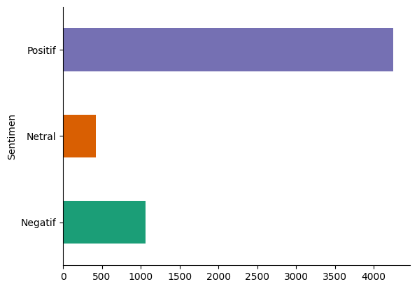

Preprocessing#
Load Data#
from sklearn import datasets
from sklearn import preprocessing
import pandas as pd
# import matplotlib.pyplot as plt
from google.colab import drive
drive.mount('/content/drive')
# data =pd.read_csv('/content/drive/MyDrive/punya orang/ima/paling_baru_Preprocessing_setelah_dibuang_yang_kosong.csv', delimiter=";")
data = pd.read_csv("https://raw.githubusercontent.com/08-Ahlaqul-Karimah/Pariwisata-New/main/Total%20Data.csv", delimiter=";")
# data=data.drop(columns=["Unnamed: 0","index"])
---------------------------------------------------------------------------
KeyboardInterrupt Traceback (most recent call last)
<ipython-input-2-ab6da640a393> in <cell line: 2>()
1 from google.colab import drive
----> 2 drive.mount('/content/drive')
3 # data =pd.read_csv('/content/drive/MyDrive/punya orang/ima/paling_baru_Preprocessing_setelah_dibuang_yang_kosong.csv', delimiter=";")
4 data = pd.read_csv("https://raw.githubusercontent.com/08-Ahlaqul-Karimah/Pariwisata-New/main/Total%20Data.csv", delimiter=";")
5 # data=data.drop(columns=["Unnamed: 0","index"])
/usr/local/lib/python3.10/dist-packages/google/colab/drive.py in mount(mountpoint, force_remount, timeout_ms, readonly)
98 def mount(mountpoint, force_remount=False, timeout_ms=120000, readonly=False):
99 """Mount your Google Drive at the specified mountpoint path."""
--> 100 return _mount(
101 mountpoint,
102 force_remount=force_remount,
/usr/local/lib/python3.10/dist-packages/google/colab/drive.py in _mount(mountpoint, force_remount, timeout_ms, ephemeral, readonly)
135 )
136 if ephemeral:
--> 137 _message.blocking_request(
138 'request_auth',
139 request={'authType': 'dfs_ephemeral'},
/usr/local/lib/python3.10/dist-packages/google/colab/_message.py in blocking_request(request_type, request, timeout_sec, parent)
174 request_type, request, parent=parent, expect_reply=True
175 )
--> 176 return read_reply_from_input(request_id, timeout_sec)
/usr/local/lib/python3.10/dist-packages/google/colab/_message.py in read_reply_from_input(message_id, timeout_sec)
94 reply = _read_next_input_message()
95 if reply == _NOT_READY or not isinstance(reply, dict):
---> 96 time.sleep(0.025)
97 continue
98 if (
KeyboardInterrupt:
data
| lokasi | Sentimen | komentar | |
|---|---|---|---|
| 0 | Air terjun toroan | Positif | Air terjun yang bagus. Tiket masuk murah sekit... |
| 1 | Air terjun toroan | Positif | Tempatnya bagus selain air terjun ,diatasnya j... |
| 2 | Air terjun toroan | Positif | Bagus |
| 3 | Air terjun toroan | Positif | Mantap |
| 4 | Air terjun toroan | Negatif | Pemandangan yg indah, adem pula suasanyanya me... |
| ... | ... | ... | ... |
| 5730 | toron simalem | Positif | Bagus |
| 5731 | toron simalem | Positif | Siiiip |
| 5732 | toron simalem | Positif | serru |
| 5733 | toron simalem | Positif | Bagus |
| 5734 | toron simalem | Positif | Bagus |
5735 rows × 3 columns
# @title Sentimen
from matplotlib import pyplot as plt
import seaborn as sns
data.groupby('Sentimen').size().plot(kind='barh', color=sns.palettes.mpl_palette('Dark2'))
plt.gca().spines[['top', 'right',]].set_visible(False)

data['Sentimen'].value_counts()
| count | |
|---|---|
| Sentimen | |
| Positif | 4254 |
| Negatif | 1062 |
| Netral | 419 |
Preprocessing#
import nltk
nltk.download('punkt')
nltk.download('stopwords')
[nltk_data] Downloading package punkt to /root/nltk_data...
[nltk_data] Unzipping tokenizers/punkt.zip.
[nltk_data] Downloading package stopwords to /root/nltk_data...
[nltk_data] Unzipping corpora/stopwords.zip.
True
_= !pip install nltk
_= !pip install indoNLP
_= !pip install gensim
_= !pip instal tqdm
import numpy as np #numpy
import re #regex
import string #string population
from nltk.tokenize import word_tokenize #tokenize
# from nltk.corpus import stopwords #stopword
from indoNLP.preprocessing import replace_slang #slank word
from nltk.stem.porter import PorterStemmer #stemming
# from tqdm.auto import tqdm #status bar
import nltk
# import os
# import warnings
# warnings.filterwarnings("ignore")
class Prepocessing:
def __init__(self):
self.listStopword = set(stopwords.words('indonesian'))
self.stemmer = PorterStemmer()
def remove_emoji(self, string): #remove emoji
emoji_pattern = re.compile("["
u"\U0001F600-\U0001F64F" # emoticons
u"\U0001F300-\U0001F5FF" # symbols & pictographs
u"\U0001F680-\U0001F6FF" # transport & map symbols
u"\U0001F1E0-\U0001F1FF" # flags (iOS)
u"\U00002702-\U000027B0"
u"\U000024C2-\U0001F251"
"]+", flags=re.UNICODE)
return emoji_pattern.sub(r' ', string)
def remove_unwanted(self, document): #clean text
# remove user mentions
document = re.sub("@[A-Za-z0-9_]+"," ", document)
# menggantdocumentkan karakter newldocumentne ("\n") dengan spasdocument
document = re.sub("\n", " ", document)
# menghdocumentlangkan URL yang ddocumentmuladocument dengan 'http' atau 'https' dan 'www'
document = re.sub(r'http\S+|www\.\s+', ' ', document)
# menghdocumentlangkan karakter non-ASCdocumentdocument dardocument teks
document = re.sub(r'[^\x00-\x7F]+', '', document)
# remove hashtags
document = re.sub("#[A-Za-z0-9_]+","", document)
# remove emojdocument's
document = self.remove_emoji(document)
# remove punctuatdocumenton
document = re.sub("[^0-9A-Za-z ]", " " , document)
# remove double spaces
document = document.replace(' '," ")
# menghdocumentlangkan ddocumentgdocumentt/angka dardocument teks
document = re.sub("\d+", "", document)
# memecah teks menjaddocument daftar kata (ldocumentst of words)
document = document.split()
# menggabungkan kembaldocument daftar kata menjaddocument teks dengan spasdocument sebagadocument pemdocumentsah
document = " ".join(document)
#hapus tab, new ldocumentne
document = document.replace("\\t", " ").replace ("\\n", " ").replace ("\\u", " ").replace ("\\", "")
#hapus non ASCdocumentdocument (emote, bahasa cdocumentna dll)
document = document.encode("ascii", "replace").decode("ascii")
# documents.append(i)
return document
def tokenize(self, text): #tokenize -> memisah kalimat
return word_tokenize(str(text.translate(str.maketrans('', '', string.punctuation)).lower()))
def normalize(self, text): #slank word -> mengganti kata yang tidak baku
return [replace_slang(kata) for kata in text]
preprocessing = Prepocessing()
data['clean'] = data['komentar'].apply([lambda x: preprocessing.remove_unwanted(x)])
data['tokenize'] = data['clean'].apply(lambda x: preprocessing.tokenize(x))
# data.head(20)
# data['clean'] = data['tokenize'].apply(lambda x: preprocessing.remove_unwanted(x))
# data['clean'] = data['komentar'].apply([lambda x: preprocessing.remove_unwanted(x)])
data
| lokasi | Sentimen | komentar | clean | tokenize | |
|---|---|---|---|---|---|
| 0 | Air terjun toroan | Positif | Air terjun yang bagus. Tiket masuk murah sekit... | Air terjun yang bagus Tiket masuk murah sekita... | [air, terjun, yang, bagus, tiket, masuk, murah... |
| 1 | Air terjun toroan | Positif | Tempatnya bagus selain air terjun ,diatasnya j... | Tempatnya bagus selain air terjun diatasnya jg... | [tempatnya, bagus, selain, air, terjun, diatas... |
| 2 | Air terjun toroan | Positif | Bagus | Bagus | [bagus] |
| 3 | Air terjun toroan | Positif | Mantap | Mantap | [mantap] |
| 4 | Air terjun toroan | Negatif | Pemandangan yg indah, adem pula suasanyanya me... | Pemandangan yg indah adem pula suasanyanya mes... | [pemandangan, yg, indah, adem, pula, suasanyan... |
| ... | ... | ... | ... | ... | ... |
| 5730 | toron simalem | Positif | Bagus | Bagus | [bagus] |
| 5731 | toron simalem | Positif | Siiiip | Siiiip | [siiiip] |
| 5732 | toron simalem | Positif | serru | serru | [serru] |
| 5733 | toron simalem | Positif | Bagus | Bagus | [bagus] |
| 5734 | toron simalem | Positif | Bagus | Bagus | [bagus] |
5735 rows × 5 columns
# data.to_csv("/content/drive/MyDrive/DRAF/DATA/preprocessing/cleaning.csv",sep=";")
data['normalize'] = data['tokenize'].apply(lambda x: preprocessing.normalize(x))
data[['komentar', 'tokenize', 'clean', 'normalize']]
| komentar | tokenize | clean | normalize | |
|---|---|---|---|---|
| 0 | Air terjun yang bagus. Tiket masuk murah sekit... | [air, terjun, yang, bagus, tiket, masuk, murah... | Air terjun yang bagus Tiket masuk murah sekita... | [air, terjun, yang, bagus, tiket, masuk, murah... |
| 1 | Tempatnya bagus selain air terjun ,diatasnya j... | [tempatnya, bagus, selain, air, terjun, diatas... | Tempatnya bagus selain air terjun diatasnya jg... | [tempatnya, bagus, selain, air, terjun, diatas... |
| 2 | Bagus | [bagus] | Bagus | [bagus] |
| 3 | Mantap | [mantap] | Mantap | [mantap] |
| 4 | Pemandangan yg indah, adem pula suasanyanya me... | [pemandangan, yg, indah, adem, pula, suasanyan... | Pemandangan yg indah adem pula suasanyanya mes... | [pemandangan, yang, indah, adem, pula, suasany... |
| ... | ... | ... | ... | ... |
| 5730 | Bagus | [bagus] | Bagus | [bagus] |
| 5731 | Siiiip | [siiiip] | Siiiip | [siiiip] |
| 5732 | serru | [serru] | serru | [serru] |
| 5733 | Bagus | [bagus] | Bagus | [bagus] |
| 5734 | Bagus | [bagus] | Bagus | [bagus] |
5735 rows × 4 columns
from nltk.corpus import stopwords
nltk.download('stopwords')
# ----------------------- get stopword from NLTK stopword -------------------------------
# get stopword indonesia
list_stopwords = stopwords.words('indonesian')
# ---------------------------- manualy add stopword ------------------------------------
# append additional stopword
list_stopwords.extend(["nya", "jg", "yg", "dg", "rt", "dgn", "ny", "d", 'klo',
'kalo', 'amp', 'biar', 'bikin', 'bilang',
'gak', 'ga', 'krn', 'nya', 'nih', 'sih',
'si', 'tau', 'tdk', 'tuh', 'utk', 'ya',
'jd', 'jgn', 'sdh', 'aja', 'n', 't',
'nyg', 'hehe', 'pen', 'u', 'nan', 'loh', 'rt',
'&', 'yah'])
# ----------------------- add stopword from txt file ------------------------------------
# read txt stopword using pandas
txt_stopword = pd.read_csv("https://raw.githubusercontent.com/masdevid/ID-Stopwords/master/id.stopwords.02.01.2016.txt", names= ["stopwords"], header = None)
# convert stopword string to list & append additional stopword
list_stopwords.extend(txt_stopword["stopwords"][0].split(' '))
# ---------------------------------------------------------------------------------------
# convert list to dictionary
list_stopwords = set(list_stopwords)
#remove stopword pada list token
def stopwords_removal(words):
return [word for word in words if word not in list_stopwords]
data['stopword'] = data['normalize'].apply(stopwords_removal)
data[["stopword"]]
# print(dataps['stopword'].head())
[nltk_data] Downloading package stopwords to /root/nltk_data...
[nltk_data] Package stopwords is already up-to-date!
| stopword | |
|---|---|
| 0 | [air, terjun, bagus, tiket, masuk, murah, ribu... |
| 1 | [tempatnya, bagus, air, terjun, diatasnya, res... |
| 2 | [bagus] |
| 3 | [mantap] |
| 4 | [pemandangan, indah, adem, suasanyanya, pinggi... |
| ... | ... |
| 5730 | [bagus] |
| 5731 | [siiiip] |
| 5732 | [serru] |
| 5733 | [bagus] |
| 5734 | [bagus] |
5735 rows × 1 columns
_= !pip install swifter
_= !pip install Sastrawi
# import Sastrawi package
from Sastrawi.Stemmer.StemmerFactory import StemmerFactory
import swifter
# create stemmer
factory = StemmerFactory()
stemmer = factory.create_stemmer()
# stemmed
def stemmed_wrapper(term):
return stemmer.stem(term)
term_dict = {}
for document in data['stopword']:
for term in document:
if term not in term_dict:
term_dict[term] = ' '
# print(len(term_dict))
# print("------------------------")
for term in term_dict:
term_dict[term] = stemmed_wrapper(term)
print(term,":" ,term_dict[term])
# print(term_dict)
# print("------------------------")
# apply stemmed term to dataframe
def get_stemmed_term(document):
return [term_dict[term] for term in document]
data['stemming'] = data['stopword'].swifter.apply(get_stemmed_term)
Output streaming akan dipotong hingga 5000 baris terakhir.
pesona : pesona
indahnya : indah
pemerintahan : perintah
pembangunan : bangun
kawasan : kawasan
gencar : gencar
disepanjang : panjang
bibir : bibir
terletak : letak
tenggelam : tenggelam
medannya : medan
lancar : lancar
diperbolehkan : boleh
menelan : tel
korban : korban
jiwa : jiwa
kemah : kemah
kalender : kalender
mah : mah
diterusin : diterusin
takut : takut
keseret : seret
worth : worth
tenang : tenang
kristal : kristal
parkirannya : parkir
panas : panas
teduh : teduh
jalanan : jalan
man : man
teman : teman
kct : kct
kbt : kbt
kunjungi : kunjung
all : all
turns : turns
sejagat : jagat
best : best
samudera : samudera
nayaman : nayam
merusak : rusak
berhulu : hulu
pemukiman : mukim
pantura : pantura
bangkalan : bangkal
kamar : kamar
mushola : mushola
pemandang : pandang
coba : coba
tengok : tengok
keatas : atas
ditinggalkan : tinggal
pengunjung : unjung
istimewa : istimewa
memandang : pandang
saty : saty
rumah : rumah
pelanggan : langgan
menunggu : tunggu
memuaakan : memuaakan
double : double
khawatir : khawatir
cinptaan : cinptaan
mu : mu
ait : ait
pilihan : pilih
mininya : mini
sungainya : sungai
biru : biru
popok : popok
bayi : bayi
bungkus : bungkus
inda : inda
selatan : selatan
persis : persis
barat : barat
masukkan : masuk
daftar : daftar
kunjungan : kunjung
nikmati : nikmat
put : put
your : your
visiting : visiting
list : list
when : when
you : you
very : very
rare : rare
sulit : sulit
dukungan : dukung
kiri : kiri
kanannya : kanan
perhatikan : perhati
pengelolaan : kelola
menyegarkan : segar
campur : campur
cokelat : cokelat
dikenal : kenal
fasum : fasum
destinasinya : destinasi
titian : titi
pakiranya : pakiranya
berbatasan : batas
beristirahat : istirahat
darimu : dari
terimakasih : terimakasih
menjaganya : jaga
terjunx : terjunx
recom : recom
seram : seram
cuy : cuy
dibandingkan : banding
selfie : selfie
berhenti : henti
memeriksa : periksa
menit : menit
cantiknya : cantik
stres : stres
perbaikan : baik
penuh : penuh
penasaran : penasaran
minum : minum
bentuknya : bentuk
gardu : gardu
mestinya : mesti
mushollanya : mushollanya
beribadah : ibadah
keliling : keliling
melipir : melipir
mengexplore : mengexplore
jujukan : juju
kawan : kawan
merasakan : rasa
duduk : duduk
kab : kab
ditengah : tengah
kec : kec
sakobanah : sakobanah
terbayarkan : bayar
volume : volume
menakutkan : takut
dipinggir : pinggir
dicarinya : cari
singgah : singgah
bentar : bentar
ditepi : tepi
potensial : potensial
dikembangkan : kembang
dibilang : bilang
papan : papan
warga : warga
nyelempit : nyelempit
ajibbbb : ajibbbb
good : good
dinantikan : nanti
memudahkan : mudah
menjangkaunya : jangkau
jembatan : jembatan
suramadu : suramadu
persiapan : siap
perbekalan : bekal
fisik : fisik
berpadu : padu
karen : karen
nyatu : nyatu
akal : akal
kerapunya : kerapu
terbentuk : bentuk
irigasi : irigasi
sawah : sawah
sarankan : saran
udara : udara
permukaan : muka
airny : airny
kehijauan : hijau
bercengkrama : bercengkrama
jatohnya : jatohnya
dpet : dpet
waterfall : waterfall
rbu : rbu
karcis : karcis
krcis : krcis
baguuss : baguuss
asliiik : asliiik
kaya : kaya
poto : poto
pakai : pakai
background : background
lautt : lautt
segi : segi
penunjang : tunjang
tertarik : tarik
kondisinya : kondisi
malas : malas
asyik : asyik
tolong : tolong
lansia : lansia
mantab : mantab
membahayakan : bahaya
kenal : kenal
disaat : saat
utuh : utuh
keruk : keruk
tersisa : sisa
ditepilaut : ditepilaut
walopun : walopun
prjlnn : prjlnn
tmpat : tmpat
mempesona : pesona
karunia : karunia
luat : luat
sempurna : sempurna
pikiran : pikir
akibat : akibat
sibuk : sibuk
solusi : solusi
okay : okay
terbatas : batas
buatan : buat
max : max
berjubel : jubel
enggak bisa : enggak bisa
renang : renang
refresing : refresing
perawan : perawan
seniman : seniman
kedepan : depan
bbrapa : bbrapa
sne : sne
wahananya : wahana
tujuan : tuju
searah : arah
nepah : nepah
amazing : amazing
wonderful : wonderful
e : e
panorama : panorama
elok : elok
lingkungan : lingkung
gilasih : gilasih
sunsetnyaa : sunsetnyaa
parah : parah
ehe : ehe
toiletnya : toilet
musholanya : musholanya
mantp : mantp
kelaut : laut
tertata : tata
alamiah : alamiah
wekend : wekend
kereeennn : kereeennn
abiiizzz : abiiizzz
bersihdan : bersihdan
rapi : rapi
enggak ada : enggak ada
temapat : temapat
refresh : refresh
batuannya : batu
hewan : hewan
kelomang : kelomang
mengalir : alir
keuntungan : untung
desiran : desir
terbawa : bawa
jauuuuuh : jauuuuuh
pusat : pusat
halus : halus
lebar : lebar
hamparan : hampar
sananya : sana
susah : susah
jalannua : jalannua
jelek : jelek
malam : malam
gelap : gelap
lampu : lampu
mengganggu : ganggu
debit : debit
laitnya : laitnya
edukasi : edukasi
sembarangan : sembarang
coz : coz
bujuk : bujuk
nyai : nyai
dewi : dewi
religi : religi
berbenah : benah
acara : acara
doyan : doyan
deh : deh
langsug : langsug
mengarah : arah
identik : identik
cafenya : cafenya
atasnya : atas
kampung : kampung
sembarang : sembarang
an : an
terbagus : bagus
heheee : heheee
otentiknya : otentik
aslinya : asli
menghasilkan : hasil
dipungut : pungut
istirahat : istirahat
pemandanganx : pemandanganx
super : super
twmpat : twmpat
uang : uang
mencoba : coba
gabungan : gabung
terjungan : jung
disuguhi : suguh
gapengen : gapengen
pulang : pulang
explore : explore
indonesia : indonesia
fotografi : fotografi
restoran : restoran
kecilan : kecil
memotret : potret
nongkrong : nongkrong
beraspal : aspal
cenderung : cenderung
jorok : jorok
apik : apik
menataan : tata
pemda : pemda
aset : aset
terindah : indah
petugas : tugas
mohon : mohon
guys : guys
perbolehkan : boleh
alasannya : alas
menjaga : jaga
venue : venue
mencuci : cuci
satuari : satuari
berjarak : jarak
menawarkan : tawar
paparan : papar
waisatawan : waisatawan
sunrise : sunrise
menonton : tonton
tumbuhan : tumbuh
ketempai : tempa
banjiiir : banjiiir
sediiiih : sediiiih
ngeri : ngeri
dipantainya : pantai
deburan : debur
gemericik : gemericik
dimaksimalkan : maksimal
pengelolaannya : kelola
anugerah : anugerah
disyukuri : syukur
bebatuan : bebatuan
fotoan : foto
tinggal : tinggal
dipadu : padu
optimal : optimal
mhon : mhon
pemerintah : perintah
tinggiiiiiii : tinggiiiiiii
jerni : jerni
tadabur : tadabur
menenangkan : tenang
terbalas : balas
capekknya : capekknya
sukapengen : sukapengen
bareng : bareng
photo : photo
memberiku : beri
terlupakan : lupa
tmpatnya : tmpatnya
aspal : aspal
kerawat : kerawat
pemangku : mang
kekuasaan : kuasa
digarap : garap
temapatnya : temapatnya
sekaliy : sekaliy
bangus : bangus
instagramable : instagramable
mini : mini
surabaya : surabaya
aksesnya : akses
mengambil : ambil
disekitar : sekitar
peralatan : alat
sholat : sholat
dalamnya : dalam
alquran : alquran
mukena : mukena
sarung : sarung
dianggap : anggap
tanah : tanah
mengalirkan : alir
kotoran : kotor
tercemar : cemar
kebersihannya : bersih
peristirahatan : istirahat
dekatnya : dekat
bagu : bagu
payment : payment
danga : danga
berburu : buru
inspirasi : inspirasi
liar : liar
is : is
that : that
directly : directly
meet : meet
actually : actually
even : even
this : this
small : small
but : but
quite : quite
now : now
days : days
really : really
crowded : crowded
by : by
many : many
local : local
tourist : tourist
and : and
there : there
trash : trash
everywhere : everywhere
looks : looks
still : still
menyambut : sambut
keunikan : uni
rekom : rekom
memajakan : maja
siang : siang
eh : eh
iya : iya
standar : standar
dilengkapi : lengkap
buka : buka
tutup : tutup
mampir : mampir
tepatnya : tepat
mengisi : isi
perut : perut
suara : suara
debur : debur
gemuruh : gemuruh
fresh : fresh
perhatian : perhati
mengeksploitasi : eksploitasi
menghubungi : hubung
scenery : scenery
memicu : picu
adrenaline : adrenaline
prasarana : prasarana
daerahnya : daerah
berteduh : teduh
hihi : hihi
okelah : oke
pembenahan : benah
kemajuan : maju
pentunjuk : pentunjuk
menuruni : turun
landscaper : landscaper
longexposure : longexposure
mania : mania
nilai : nilai
daya : daya
mendekati : dekat
letak : letak
geografis : geografis
mumpuni : mumpuni
travellers : travellers
sejalan : jalan
sabtu : sabtu
kemarin : kemarin
langit : langit
menampilkan : tampil
btw : btw
ku : ku
ketinggalan : tinggal
hhiks : hhiks
apalah : apa
ditakdirkan : takdir
lelah : lelah
mencintai : cinta
bukanya : buka
mendirikan : diri
tenda : tenda
menjual : jual
rute : rute
kebanggaan : bangga
perkembangan : kembang
terkelola : kelola
hadir : hadir
mengesankan : kesan
dipesisir : pesisir
cuaca : cuaca
jualan : jual
bawa : bawa
biarlah : biar
bangunan : bangun
rusak : rusak
spotnya : spotnya
menguras : uras
tenaga : tenaga
haha : haha
menampak : tampak
nelayan : nelayan
pemancing : pancing
dilarang : larang
dikeruk : keruk
dijual : jual
pecinta : cinta
cipratan : ciprat
takjub : takjub
bro : bro
v : v
jarak : jarak
turoan : turoan
penelitian : teliti
intinya : inti
nyemplung : nyemplung
mencari : cari
turjun : turjun
padu : padu
niagara : niagara
kau : kau
gelombang : gelombang
berwisata : wisata
seruuuu : seruuuu
tahap : tahap
exotic : exotic
unt : unt
legendaris : legendaris
tok : tok
wanita : wanita
mengecewakan : kecewa
layak : layak
buaguss : buaguss
buangett : buangett
pasar : pasar
tradisional : tradisional
terbesar : besar
berhati : hati
membentuk : bentuk
lanskap : lanskap
harapkan : harap
yerjun : yerjun
perhentian : henti
hidangan : hidang
lezat : lezat
sunyi : sunyi
lingkungannya : lingkung
menyarankan : saran
ups : ups
menyeramkan : seram
tugas : tugas
ruang : ruang
buruk : buruk
pencarian : cari
google : google
merekomendasikan : rekomendasi
nusantara : nusantara
jeju : jeju
korea : korea
bodoh : bodoh
limbah : limbah
tebu : tebu
dibuang : buang
bau : bau
sedap : sedap
tercium : cium
areanya : area
menghabiskan : habis
tiketnya : tiket
kennengennah : kennengennah
cellep : cellep
sayangkan : sayang
dialiran : alir
alangkah : alangkah
membersihkan : bersih
kondisi : kondisi
kecoklatan : coklat
menyesap : sesap
biayanya : biaya
perjalanannya : jalan
melelahkan : lelah
dicoba : coba
infokan : info
musin : musin
info : info
kontrak : kontrak
senanng : senanng
bahagia : bahagia
toro : toro
tambahkan : tambah
taman : taman
perorang : orang
bersaing : saing
leat : leat
berbahaya : bahaya
manambah : manambah
panoroma : panoroma
terjung : jung
kisaran : kisar
cafee : cafee
kembung : kembung
keunikannya : uni
keindahannya : indah
unit : unit
pemandanganyg : pemandanganyg
dibibir : bibir
terkoordiner : terkoordiner
untu : untu
membayar : bayar
rupiah : rupiah
permasalahannya : masalah
banyaknya : banyak
ebtry : ebtry
membuang : buang
sumbernya : sumber
mempermudah : mudah
disajikan : saji
menyantap : santap
laah : laah
bridge : bridge
muara : muara
curam : curam
gosok : gosok
berdasarkan : dasar
wawancara : wawancara
menyimpan : simpan
kisah : kisah
suami : suami
istri : istri
sakti : sakti
sayyid : sayyid
abdullah : abdullah
siti : siti
marwah : marwah
buju : buju
panyeppen : panyeppen
sang : sang
makam : makam
ramah : ramah
kontrakan : kontra
terkuat : kuat
mantaapp : mantaapp
bukber : bukber
keterangan : terang
dikenai : kena
tarif : tarif
terjamah : jamah
bali : bal
muda : muda
mudi : mud
rasakannya : rasa
langsng : langsng
selpie : selpie
kopi : kopi
rempah : rempah
sesuai : sesuai
bengong : bengong
nyamuk : nyamuk
pelestariannya : lestari
mengesahkan : kesah
manusia : manusia
luapan : luap
dialihkan : alih
terdekat : dekat
cerdik : cerdik
langkah : langkah
kerja : kerja
mereuen : mereuen
murni : murni
pinggiran : pinggir
barokah : barokah
wali : wali
dipakai : pakai
evaluasi : evaluasi
kemahalan : mahal
diperlakukan : laku
lantai : lantai
mengerti : erti
peringkatnya : peringkat
tho : tho
berbeda : beda
daramiata : daramiata
penikmat : nikmat
semuga : semuga
kedepanya : depa
amin : amin
mski : mski
setia : setia
reda : reda
mengurangi : kurang
disuguhkan : suguh
basah : basah
kondisix : kondisix
berkah : berkah
tur : tur
mashlahah : mashlahah
lokosi : lokos
tanamannya : tanam
siram : siram
kering : kering
seakan : akan
diperhatikan : perhati
keadaannya : ada
naiknya : naik
keringat : keringat
meleleh : leleh
managemen : managemen
pariwisatanya : pariwisata
daramista : daramista
rekan : rekan
boekit : boekit
barangkali : barangkali
genteng : genteng
penang : nang
hubungi : hubung
wa : wa
recomen : recomen
kesitu : kesitu
swafoto : swafoto
siapkan : siap
extra : extra
terhalang : halang
pohon : pohon
depannya : depan
terkena : kena
wahana : wahana
bervariasi : variasi
overall : overall
proses : proses
pengembangan : kembang
representatif : representatif
bonos : bonos
loket : loket
areal : areal
dimalam : malam
alasan : alas
bagaimananya : bagaimana
menyukainya : suka
terbilang : bilang
ragukan : ragu
eman : eman
jalananya : jalananya
lenteng : lenteng
pemeliharaan : pelihara
wisatane : wisatane
bguss : bguss
bagussa : bagussa
romantis : romantis
menghirup : hirup
memasuki : pasuk
manajemen : manajemen
menyembuhkan : sembuh
oksigen : oksigen
terutam : terutam
guud : guud
josh : josh
lembah : lembah
tambahan : tambah
diperhitungkan : hitung
posisinya : posisi
dibukit : bukit
disediakan : sedia
wefie : wefie
bunga : bunga
kurcaci : kurcaci
flying : flying
fox : fox
pastinya : pasti
memukau : pukau
ciptaanmu : cipta
swt : swt
uji : uji
adrenalin : adrenalin
pulangnya : pulang
khusus : khusus
fasilitasnya : fasilitas
intagrameble : intagrameble
moment : moment
kebersamaan : sama
aing : aing
datengnya : datengnya
rada : rada
jumat : jumat
kesejukan : sejuk
ketenangan : tenang
teriknya : terik
self : self
bagoes : bagoes
tempatx : tempatx
remaja : remaja
berselfie : berselfie
berwefie : berwefie
inigin : inigin
kesininya : kesini
kepanasan : panas
selfinya : selfinya
perawatannya : awat
terkait : kait
infrastruktur : infrastruktur
dibenanhi : dibenanhi
safety : safety
traveller : traveller
holidayer : holidayer
ketinggian : tinggi
wilayahnya : wilayah
far : far
peejuangan : peejuangan
datamg : datamg
bolong : bolong
gemerlap : gemerlap
lelampu : lampu
kejauhab : kejauhab
mendaki : daki
berkelok : kelok
ria : ria
atauu : atauu
wc : wc
sejuknya : sejuk
profesional : profesional
layanan : layan
terpublish : terpublish
dipedesaan : desa
brazil : brazil
bernuansa : nuansa
islami : islami
beraneka : aneka
ragam : ragam
tanaman : tanam
kolega : kolega
terpelihara : pelihara
situ : situ
sport : sport
tomantisan : tomantisan
indaah : indaah
mantulll : mantulll
madu : madu
seeeeepp : seeeeepp
terbengkalai : bengkalai
rerumputan : rumput
rapuh : rapuh
love : love
reot : reot
sepeda : sepeda
gantungnya : gantung
berkarat : karat
beroperasi : operasi
syarat : syarat
nuansa : nuansa
menyusul : susul
namanya : nama
posisi : posisi
mdpl : mdpl
dilewati : lewat
track : track
ekstrim : ekstrim
berbayar : bayar
harganya : harga
guysss : guysss
mengmbil : mengmbil
pwmandangan : pwmandangan
bingung : bingung
menyuguhi : suguh
gazebo : gazebo
melepas : lepas
dtaran : dtaran
suguhkan : suguh
daratan : darat
bawahnya : bawah
gubuk : gubuk
terbuat : buat
bambu : bambu
mengobrol : obrol
berliku : liku
lewati : lewat
dapt : dapt
tongsis : tongsis
sdhh : sdhh
guyss : guyss
wewwww : wewwww
hitz : hitz
lo : lo
malang : malang
yogyakarta : yogyakarta
awan : awan
tkp : tkp
kece : kece
kekinian : kini
mepet : mepet
maghrib : maghrib
saung : saung
review : review
sangaaat : sangaaat
dibuka : buka
didukung : dukung
modifikasi : modifikasi
telihat : telihat
membuka : buka
menyaksikan : saksi
menghampar : hampar
mainstream : mainstream
kreatif : kreatif
bukitnya : bukit
aduhai : aduhai
pernak : pernak
pernik : pernik
lambu : lambu
ksana : ksana
fotografernya : fotografer
memfoto : foto
renovasi : renovasi
lanjutkan : lanjut
manjakanbdan : manjakanbdan
nenangin : nenangin
yinggi : yinggi
daramistah : daramistah
city : city
paket : paket
zona : zona
sedkit : sedkit
populer : populer
kalangan : kalang
penantang : tantang
berswafoto : berswafoto
kelap : kelap
kelip : kelip
menerangi : rang
tersedianya : sedia
berbatu : batu
dibawahnya : bawah
serasa : serasa
kepala : kepala
arena : arena
memacu : pacu
tali : tali
yuukkk : yuukkk
dataran : datar
ootd : ootd
wedding : wedding
outdor : outdor
jantung : jantung
nge : nge
hits : hits
kekurangannya : kurang
keamanannya : aman
pemangdangannya : pemangdangannya
terbentang : bentang
permainannya : main
hobby : hobby
narsis : narsis
dekorasi : dekorasi
roda : roda
lengkapi : lengkap
permainan : main
istagramebel : istagramebel
terskhir : terskhir
mojok : mojok
penerangan : terang
perbanyak : banyak
jual : jual
souvenir : souvenir
baju : baju
khas : khas
dedaunan : dedaunan
becek : becek
keluarnya : keluar
dibandung : bandung
bandungnya : bandung
menantang : tantang
kembangkan : kembang
views : views
daratista : daratista
perluasan : luas
gersang : gersang
petualangan : tualang
diperlebar : lebar
keindhannya : keindhannya
menyejukkan : sejuk
selipi : selip
boqiet : boqiet
kirang : kirang
tempa : tempa
not : not
bad : bad
recomendasi : recomendasi
kelok : kelok
dibayangkan : bayang
sia : sia
direkomendasi : rekomendasi
libur : libur
guru : guru
ular : ular
terusan : terus
okee : okee
lingkar : lingkar
perbatasan : batas
kalianget : kalianget
sumatra : sumatra
rugilah : rugi
didesa : desa
dsramista : dsramista
kakinya : kaki
menanjak : tanjak
buru : buru
pohonnya : pohon
selvi : selvi
distinasi : distinasi
semenep : menep
suntuk : suntuk
kawand : kawand
sesuwai : sesuwai
andai : andai
isi : isi
kantong : kantong
kelelahan : lelah
kepenatan : penat
kesibukan : sibuk
jalanx : jalanx
bahaya : bahaya
lari : lari
hehehe : hehehe
savety : savety
pengelolah : elo
brkumpul : brkumpul
diperbaiki : baik
ksna : ksna
taraf : taraf
lekas : lekas
dibenahi : benah
secepatnya : cepat
pintu : pintu
membaik : baik
ujung : ujung
eksplore : eksplore
kecenya : kece
nuansanya : nuansa
mendadak : dadak
kabut : kabut
bermunculan : muncul
penggemar : gemar
selfiloop : selfiloop
muat : muat
mengalami : alami
kolam : kolam
ruko : ruko
kemadura : kemadura
ajak : ajak
pembangunannya : bangun
me : me
informasinya : informasi
perkembangannya : kembang
diperbaharui : baharu
taoi : taoi
disan : disan
kecewakan : kecewa
hai : hai
pembayaran : bayar
membingungkan : bingung
satukan : satu
petunjuk : tunjuk
menyusahkan : susah
bngetlah : bngetlah
selecta : selecta
malank : malank
selfienya : selfienya
bngeetttttz : bngeetttttz
turis : turis
akomodasi : akomodasi
penunjuk : tunjuk
menjelalang : jalang
dibagi : bagi
mahir : mahir
menyetir : setir
lolasi : lolasi
prewed : prewed
rekomen : rekomen
rujak : rujak
harinya : hari
mantapss : mantapss
setapak : setapak
balita : balita
hany : hany
selesai : selesai
cocoknya : cocok
diperlrbar : diperlrbar
reflesing : reflesing
menggenggam : genggam
gila : gila
wilayahx : wilayahx
auo : auo
lumayanlah : lumayan
soree : soree
jos : jos
cuci : cuci
jslan : jslan
krg : krg
bikers : bikers
seruuuuu : seruuuuu
sesuainya : sesuai
bergoyang : goyang
ala : ala
dasarnya : dasar
meningkatkan : tingkat
pejalan : pejal
selalau : lalau
seni : seni
romantisme : romantisme
melarikan : lari
daramesta : daramesta
tinj : tinj
situs : situs
kencan : kencan
menempatkan : tempat
klasik : klasik
direkomen : direkomen
komplainsssss : komplainsssss
emmiuuuuaaaahhh : emmiuuuuaaaahhh
didatangi : datang
kayu : kayu
reyot : reyot
menembus : tembus
pedesaan : desa
bersahaja : sahaja
disayangkan : sayang
oknum : oknum
sengaja : sengaja
menukar : tukar
kunci : kunci
vario : vario
ditukar : tukar
taunya : tau
dikota : kota
kejauhan : jauh
sisi : sisi
diketinggian : tinggi
busuk : busuk
penjaganya : jaga
jujur : jujur
rimba : rimba
gantung : gantung
instagramabel : instagramabel
pemandanganny : pemandanganny
pasilitasny : pasilitasny
tempatny : tempatny
daun : daun
sapu : sapu
rawat : rawat
kapok : kapok
karaoekan : karaoekan
masyaallah : masyaallah
asyiknya : asyik
beruntung : untung
vip : vip
mas : mas
nunjukin : nunjukin
semi : semi
guide : guide
pertambangan : tambang
aktiv : aktiv
aktivitas : aktivitas
kolamnya : kolam
bks : bks
diambilin : diambilin
batunya : batu
tebing : tebing
bekas : bekas
galian : gali
tambang : tambang
off : off
road : road
cuacanya : cuaca
panasss : panasss
sunscreen : sunscreen
sunglasses : sunglasses
ampun : ampun
berdebu : debu
jaddih : jaddih
dibagian : bagi
berubah : ubah
fungsi : fungsi
next : next
maps : maps
diputerin : diputerin
berusaha : usaha
menghindar : hindar
gasruk : gasruk
alhasil : alhasil
cat : cat
bemper : bemper
ngelupas : ngelupas
map : map
arahnya : arah
perempatan : empat
papasan : papas
berlubang : lubang
fasilotas : fasilotas
pegembangan : pegembangan
artistik : artistik
kitq : kitq
penarik : tarik
dicgat : dicgat
suruh : suruh
weekend : weekend
survey : survey
truk : truk
dibantu : bantu
lokal : lokal
mendingan : mending
ujan : ujan
masker : masker
debu : debu
bergelombang : gelombang
didanau : danau
h : h
idul : idul
fitri : fitri
petasan : petas
knalpot : knalpot
mengenakan : kena
pungli : pungli
didekat : dekat
dikasih : kasih
pemilik : milik
begal : begal
disuruh : suruh
gang : gang
seikhlasnya : ikhlas
memilih : pilih
dimiliki : milik
dimanfaatkan : manfaat
cegat : cegat
arahkan : arah
covid : covid
fan : fan
sejatinya : sejati
uniknya : unik
alat : alat
berat : berat
lalang : lalang
mengangkut : angkut
pamandangannya : pamandangannya
ditingkatnya : tingkat
shg : shg
perahu : perahu
getek : getek
resmi : resmi
polisi : polisi
tidur : tidur
pengendara : kendara
danau : danau
jeddih : jeddih
lurus : lurus
pertigaan : tiga
belok : belok
ikuti : ikut
simpangan : simpang
mengalah : kalah
tersamar : samar
point : point
nama : nama
kas : kas
sumbangan : sumbang
rombongan : rombong
ikon : ikon
berpikir : pikir
tempaynya : tempaynya
kelolah : kelolah
penduduk : duduk
maret : maret
pekerja : kerja
sewakan : sewa
proyek : proyek
bersliweran : bersliweran
pengerjaan : kerja
penggalian : gali
bata : bata
putih : putih
igable : igable
kluaran : kluaran
hancur : hancur
pandemi : pandemi
retribusi : retribusi
tanggal : tanggal
sedia : sedia
kacamata : kacamata
berterbangan : bangan
b : b
serius : serius
lumut : lumut
dibersihin : dibersihin
ditarik : tarik
goa : goa
experince : experince
titik : titik
bicaranya : bicara
tanda : tanda
pinta : pinta
dalm : dalm
apapun : apa
yauda : yauda
gapapa : gapapa
tarik : tarik
ngeprank : ngeprank
hhhhmmmm : hhhhmmmm
kelilipan : kelilip
sunblock : sunblock
kulit : kulit
gosong : gosong
jadih : jadih
persebeda : beda
menghitam : hitam
kasih : kasih
mbrasak : mbrasak
siapin : siapin
illegal : illegal
sepuluh : puluh
berkali : kali
for : for
the : the
first : first
plat : plat
ketemu : ketemu
blgnya : blgnya
ngandelin : ngandelin
gmaps : gmaps
bawalah : bawa
preman : preman
mengaku : aku
bertiket : tiket
infaq : infaq
maju : maju
ratus : ratus
pote : pote
minggu : minggu
dikuras : kuras
penjaga : jaga
mengomong : omong
aksesibilitas : aksesibilitas
spesial : spesial
selebihnya : lebih
berantakan : beranta
batuan : batu
pengangkut : angkut
terik : terik
emezing : emezing
ditarikin : ditarikin
duitrb : duitrb
ditarok : ditarok
wkwkw : wkwkw
dikasi : kasi
pemandian : mandi
palang : palang
instagrammable : instagrammable
medan : medan
digolongkan : golong
rawan : rawan
aktifitas : aktifitas
kapurnya : kapur
alakadarnya : alakadarnya
kosong : kosong
kegiatan : giat
berangkat : berangkat
hawa : hawa
kapal : kapal
instragrameble : instragrameble
portal : portal
potongan : potong
engunjung : engunjung
masim : masim
oktober : oktober
penyempurnaan : sempurna
dikekola : kola
dihitung : hitung
orangnya : orang
lu : lu
know : know
puanaaaaasssnya : puanaaaaasssnya
enggak mau : enggak mau
spf : spf
botol : botol
dimintain : dimintain
majuan : maju
dikit : dikit
loketnya : loket
backsound : backsound
tandus : tandus
weekday : weekday
berpasir : pasir
mengendarai : kendara
foodcourt : foodcourt
mengolah : olah
pengolahan : olah
berlama : lama
perkampungan : kampung
kaget : kaget
pengelolaanya : pengelolaanya
dicegat : cegat
sedikir : kir
nomor : nomor
baiknya : baik
kesama : sama
over : over
puncak : puncak
payung : payung
marah : marah
hitam : hitam
topi : topi
pendukung : dukung
bilas : bilas
pedagang : dagang
ringan : ringan
lembar : lembar
pecahan : pecah
berdua : dua
tarikan : tari
kapru : kapru
data : data
benerin : benerin
kesasar : kesasar
targetan : target
mengenakkan : enak
pungliiiiiii : pungliiiiiii
itupun : itu
nampung : nampung
antrinya : antri
kecuali : kecuali
sewa : sewa
memenuhi : penuh
hasrat : hasrat
karcisnya : karcis
dobel : dobel
pelayananya : pelayananya
jalanya : jala
panaaaaassss : panaaaaassss
tersorot : sorot
sinar : sinar
mintak : mintak
i : i
menyusut : susut
overral : overral
walah : walah
gan : gan
managemennya : managemennya
sejernih : jernih
sad : sad
pesing : pesing
renov : renov
puanas : puanas
danaunya : danau
anggaran : anggar
apbd : apbd
bertanggung : tanggung
selasa : selasa
pink : pink
ditagih : tagih
dirampok : rampok
tingkatannya : tingkat
gblk : gblk
dibegitukan : begitu
perasaan : asa
anginya : anginya
kencang : kencang
sesak : sesak
pungutan : pungut
gais : gais
dipegang : pegang
beberap : beberap
hra : hra
min : min
syedihhh : syedihhh
ditertibkan : tertib
iuran : iur
aktif : aktif
mengatas : atas
namakan : nama
jangab : jangab
mengikuti : ikut
dihimbau : dihimbau
mumpung : mumpung
ingini : ingin
instragamable : instragamable
pola : pola
kerukannya : kerukannya
nambangnya : nambangnya
perhitungan : hitung
berduaan : dua
menurutku : turut
sistem : sistem
administrasi : administrasi
keserakahan : serakah
keuar : uar
sdm : sdm
oct : oct
seputih : putih
recomend : recomend
ditindak : tindak
tegass : tegass
otw : otw
narikin : narikin
sepiiiiii : sepiiiiii
menjengkelkan : jengkel
kudu : kudu
silau : silau
berlumut : lumut
menyebabkan : sebab
tergelincir : gelincir
suhu : suhu
eks : eks
bea : bea
minusnya : minus
sudut : sudut
terekspose : ekspose
kesannya : kesan
memalak : malak
ekspektasinya : ekspektasinya
semrawut : semrawut
pindah : pindah
masu : masu
kapoooook : kapoooook
usahakan : usaha
ijo : ijo
biruuu : biruuu
bayarnya : bayar
elf : elf
bis : bis
tanggung : tanggung
sptnya : sptnya
semenarik : tarik
sarpras : sarpras
kasihan : kasihan
palaknya : palak
barusan : barusan
dibikin : bikin
emosi : emosi
punglinya : pungli
dilokasi : lokasi
ditutup : tutup
masif : masif
repetisi : repetisi
beban : beban
maling : maling
ketahuan : tahu
mengandalkan : andal
gps : gps
berfungsi : fungsi
truck : truck
mendebarkan : debar
pagar : pagar
pengaman : kam
dinas : dinas
terjamin : jamin
liburpun : libur
soso : soso
nyuciin : nyuciin
ekspetasi : ekspetasi
dipalak : palak
perusahaan : usaha
berbentuk : bentuk
kotak : kotak
terpotong : potong
terkotak : kotak
dibawa : bawa
mencapai : capai
tebingnya : tebing
tumpukan : tumpu
pengeruk : keruk
parahnya : parah
pemungut : mungut
ulet : ulet
pemalak : malak
berkarcis : karcis
terkenal : kenal
eksplor : eksplor
kejahatan : jahat
akam : akam
banyal : banyal
penghasilan : hasil
bertambahnya : tambah
dsb : dsb
sebenar : benar
tata : tata
terkesan : kes
terurus : urus
studi : studi
banding : banding
stigi : stigi
lumanyan : lumanyan
desan : desan
wew : wew
kampun : kam
pria : pria
berkuncir : kuncir
duit : duit
du : du
bentuk : bentuk
rupa : rupa
menyengat : sengat
sorean : sore
charge : charge
arosbaya : arosbaya
soob : soob
alias : alias
aprkiran : aprkiran
sebersih : bersih
perapihan : perapihan
bayak : bayak
pp : pp
kawah : kawah
prewedd : prewedd
informasi : informasi
pengelolahan : pengelolahan
diatur : atur
palak : palak
bon : bon
kuitansi : kuitansi
ilfil : ilfil
duluan : duluan
berpapasan : papas
terhitung : hitung
mondar : mondar
mandir : mandir
santun : santun
jaganya : jaga
pengamanan : aman
putra : putra
putri : putri
kecilnya : kecil
disitu : situ
jls : jls
aduh : aduh
ulasan : ulas
lapis : lapis
total : total
ditembakin : ditembakin
bergerombol : gerombol
bandit : bandit
mengincar : incar
pengguna : guna
pembegal : begal
berkelompok : kelompok
clurit : clurit
terkoordinir : terkoordinir
adu : adu
argumen : argumen
dibayar : bayar
expetasi : expetasi
aire : aire
receh : receh
heran : heran
stigma : stigma
negatif : negatif
banya : banya
aji : aji
sungkan : sungkan
malu : malu
nolong : nolong
arahin : arahin
ujungnya : ujung
jaddhih : jaddhih
memprihatinkan : prihatin
terkondisikan : kondisi
gamping : gamping
retak : retak
menghawatirkan : menghawatirkan
harapan : harap
tarikannya : tari
menghadapi : hadap
kepul : kepul
serpihan : serpih
dianjurkan : anjur
sedan : sedan
september : september
dituju : tuju
birunya : biru
kanan : kanan
hihii : hihii
plus : plus
panasnya : panas
seikhlas : ikhlas
cemberut : cemberut
mukanya : muka
haus : haus
laper : laper
musholah : musholah
kedai : kedai
jajanan : jajan
anti : anti
cowoknya : cowok
aksi : aksi
premanisme : preman
merajalela : rajalela
setor : setor
gunanya : guna
berempat : empat
mberitau : mberitau
menyodorkan : sodor
masak : masak
beewarna : beewarna
bny : bny
beli : beli
jajan : jajan
hemh : hemh
tagihan : tagih
byr : byr
menahan : tahan
panaaasss : panaaasss
doang : doang
ekstra : ekstra
googlemap : googlemap
pindahkan : pindah
lake : lake
blue : blue
hill : hill
pute : pute
memaksa : paksa
dibeberapa : beberapa
sbsr : sbsr
tmasuk : tmasuk
tulisannya : tulis
tyta : tyta
numpang : numpang
busetttt : busetttt
premannya : preman
mintain : mintain
telaganya : telaga
halo : halo
dikolam : kolam
mikir : mikir
benaran : benar
giliran : gilir
ditungguin : ditungguin
maklum : maklum
sbtlnya : sbtlnya
terkikis : kikis
geregetan : gereget
besarnya : besar
calon : calon
konon : konon
diajak : ajak
pelarian : lari
senyum : senyum
teruntuk : untuk
keluhan : keluh
kekecewaan : kecewa
sabana : sabana
batita : batita
itung : itung
dam : dam
swadaya : swadaya
pelindung : lindung
tabir : tabir
surya : surya
dimunta : dimunta
biaga : biaga
dikantong : kantong
prioritas : prioritas
tmp : tmp
epik : epik
berkerikil : kerikil
mulus : mulus
kendalanya : kendala
memperbaiki : baik
instgramable : instgramable
hidden : hidden
gemsnya : gemsnya
genangan : genang
kapasitas : kapasitas
terjal : terjal
able : able
berangin : angin
gatahan : gatahan
konstruksi : konstruksi
sanapun : sana
tandanya : tanda
kebiasaan : biasa
potopoto : potopoto
hatihati : hatihati
biruuuu : biruuuu
berisik : berisik
suarasuara : suarasuara
mesin : mesin
ddari : ddari
berbekal : bekal
feeling : feeling
preweding : preweding
postweding : postweding
kesananya : kesana
rumornya : rumor
ditariki : tarik
angel : angel
mulut : mulut
pergambangan : gambang
sepuasnya : puas
model : model
debunya : debu
kaca : kaca
disisi : sisi
muncul : muncul
diliburkan : libur
gkin : gkin
jadikan : jadi
mengenaskan : enas
restribusi : restribusi
secantik : cantik
riwayatmu : riwayat
mengantar : antar
diadakan : ada
tpq : tpq
al : al
firdaus : firdaus
belajar : ajar
tahfidz : tahfidz
takjud : takjud
diciptakan : cipta
juni : juni
bukitjaddih : bukitjaddih
polanya : pola
manual : manual
sebelahnya : belah
masyaalloh : masyaalloh
tebal : tebal
carwash : carwash
menempel : tempel
komitmen : komitmen
wabil : wabil
mengembangkan : kembang
sukses : sukses
desanya : desa
makmur : makmur
sepatu : sepatu
lengan : lengan
jaddihih : jaddihih
diluar : luar
eksepetasi : eksepetasi
pemanfaatan : manfaat
ditakutkan : takut
video : video
klip : klip
puasa : puasa
mendung : mendung
menyertai : serta
diantar : antar
menaikkan : naik
banhkalan : banhkalan
aesthetic : aesthetic
jago : jago
take : take
penambangannya : tambang
ditawarkan : tawar
pemandu : pandu
pertandingan : tanding
direnovasi : renovasi
penampilan : tampil
ngetrip : ngetrip
grafer : grafer
arek : arek
suroboyo : suroboyo
rene : rene
cuk : cuk
tampaklah : tampak
sinjay : sinjay
primadona : primadona
membantu : bantu
jasa : jasa
persewaan : sewa
gethek : gethek
spektakuler : spektakuler
bertambah : tambah
kesekian : sekian
kalinya : kali
poteh : poteh
penambang : tambang
diakses : akses
persawahan : sawah
terobati : obat
menyilaukan : silau
mmh : mmh
ubah : ubah
kebantu : bantu
megah : megah
mengagumkan : kagum
rakit : rakit
berkeliling : keliling
duanya : dua
tamah : tamah
asing : asing
menitan : menit
dikalangan : kalang
traveler : traveler
internasional : internasional
meyuguhkan : meyuguhkan
yangvputih : yangvputih
salju : salju
pengawasan : awas
kesalahan : salah
menyisakan : sisa
beraturan : atur
mentari : mentari
diisi : isi
ditemukan : temu
minggir : minggir
gantian : ganti
langaung : langaung
membuktikan : bukti
tersembunyi : sembunyi
mundur : mundur
sempatkan : sempat
tertingginya : tinggi
bukt : bukt
gems : gems
dibentuk : bentuk
ojek : ojek
perahunya : perahu
operasi : operasi
kuda : kuda
joget : joget
didinding : dinding
putihnya : putih
idealnya : ideal
gaiss : gaiss
walapun : walapun
jalurnya : jalur
berpotensi : potensi
liang : liang
jaman : jaman
toko : toko
suvenir : suvenir
kantin : kantin
instragram : instragram
kearah : arah
minimal : minimal
mpv : mpv
suv : suv
sangar : sangar
citycar : citycar
disekitarnya : sekitar
bekal : bekal
percaya : percaya
ngasihkan : ngasihkan
ta : ta
pemandunya : pandu
moto : moto
bertepatan : tepat
lebaran : lebaran
ide : ide
berkeliaran : liar
kesenangan : senang
omicron : omicron
ticketing : ticketing
tertibkan : tertib
amazeee : amazeee
datangi : datang
sumatera : sumatera
mancanegara : mancanegara
dijogja : dijogja
breksi : breksi
pandai : pandai
mengarungi : arung
serbuk : serbuk
kaki : kaki
pegangan : pegang
menjadikan : jadi
selayaknya : layak
koordinasi : koordinasi
berani : berani
pemisahan : pisah
tambanganya : tambanganya
pertimbangkan : timbang
renangnya : renang
disulap : sulap
outdoor : outdoor
kontribusi : kontribusi
bolak : bolak
penutup : tutup
hidung : hidung
tergantung : gantung
klik : klik
telaga : telaga
berakit : rakit
memakai : pakai
sure : sure
bring : bring
wear : wear
a : a
wide : wide
proper : proper
shoes : shoes
avoid : avoid
sliped : sliped
umbrella : umbrella
gerbang : gerbang
nemu : nemu
ditunjukin : ditunjukin
sangattttt : sangattttt
indahhhhh : indahhhhh
lukisan : lukis
rumput : rumput
menghijau : hijau
mengundang : undang
untung : untung
alhamdulillaah : alhamdulillaah
bentukan : bentuk
menjulang : julang
dinaiki : naik
ruangan : ruang
kubangan : kubang
terisi : isi
tetes : tetes
kepedulian : peduli
penguasa : kuasa
insyaaallah : insyaaallah
one : one
stop : stop
destination : destination
bimbingan : bimbing
kampungnya : kampung
kearea : area
tambangnya : tambang
kepengen : ken
dipatok : patok
bebas : bebas
dijelajahi : jajah
mendekat : dekat
rumputnya : rumput
longsor : longsor
rentang : rentang
disiapkan : siap
spoot : spoot
cumak : cumak
instragameble : instragameble
juala : juala
mknan : mknan
exploitasi : exploitasi
mdhan : mdhan
breksit : breksit
jogja : jogja
mengocak : kocak
keluarkan : keluar
berhentikan : henti
pantulan : pantul
efek : efek
kesan : kesan
tersendiri : sendiri
upload : upload
sidoarjo : sidoarjo
melintasi : lintas
punah : punah
buff : buff
penghalau : halau
senin : senin
berasa : asa
horor : horor
via : via
feri : feri
tanjung : tanjung
perak : perak
pesepeda : sepeda
epic : epic
burneh : burneh
cmiiw : cmiiw
lihatnya : lihat
layar : layar
komputer : komputer
exotis : exotis
badan : badan
dewasa : dewasa
nekat : nekat
sedimikan : mi
segeerrrrr : segeerrrrr
pendemi : demi
jaring : jaring
warungnya : warung
promosi : promosi
medsos : medsos
pengelolanya : kelola
perkendaraan : kendara
diitung : diitung
perorangan : orang
menuru : menuru
termanage : termanage
penghobi : hobi
uhuy : uhuy
menambang : tambang
diusahakan : usaha
standart : standart
enjoy : enjoy
jaddihnya : jaddihnya
ogah : ogah
terbebas : bebas
mak : mak
berlokasi : lokasi
offroad : offroad
ideal : ideal
sisa : sisa
dilewatin : dilewatin
ngejar : ngejar
ornamen : ornamen
oiya : oiya
kabar : kabar
berteduhnya : teduh
penghilang : hilang
dikantor : kantor
dompet : dompet
around : around
seadanya : ada
mie : mie
instan : instan
hilirmudik : hilirmudik
terencana : rencana
jemput : jemput
menyebrang : menyebrang
selat : selat
menginjak : injak
goyang : goyang
ngarahin : ngarahin
potonya : potonya
gerimis : gerimis
paru : paru
berantai : beranta
berpengaruh : pengaruh
kios : kios
menyulitkan : sulit
tahan : tahan
nambang : nambang
diterik : terik
bayaran : bayar
low : low
usia : usia
menjangkau : jangkau
sumber : sumber
kemari : kemari
serba : serba
daunan : daun
pohonan : pohon
rumahan : rumah
pahatan : pahat
restribusinya : restribusinya
teratur : atur
nyampek : nyampek
diikutin : diikutin
risih : risih
maksa : maksa
niatnya : niat
diola : diola
sesi : sesi
disukai : suka
kaum : kaum
penyewaan : sewa
terketak : ketak
hias : hias
ditanyain : ditanyain
untungnya : untung
ditambang : tambang
resminya : resmi
hobi : hobi
beroprasi : beroprasi
asalnya : asal
kebutuhan : butuh
dikelilingi : keliling
lalui : lalu
lokasinta : lokasinta
nasional : nasional
pertamakali : pertamakali
banyao : banyao
eisata : eisata
atmosfernya : atmosfer
china : china
kendala : kendala
p : p
l : l
gue : gue
o : o
pepohonan : pohon
driver : driver
mengelilingi : keliling
berbagi : bagi
kendara : kendara
apung : apung
trek : trek
illahi : illahi
eksplorasi : eksplorasi
multi : multi
konsep : konsep
ekonomi : ekonomi
jaraknya : jarak
batugamping : batugamping
vegetasi : vegetasi
angle : angle
kameranya : kamera
breksinya : breksi
subhanallah : subhanallah
picture : picture
only : only
eksploitasi : eksploitasi
diambil : ambil
cocoklah : cocok
pembentukan : bentuk
komen : komen
keasyikan : asyik
anginnya : angin
sepoi : sepoi
kadarnya : kadar
operasional : operasional
menerima : terima
tamu : tamu
of : of
places : places
pictures : pictures
relax : relax
berantas : berantas
nakal : nakal
unk : unk
jaket : jaket
calo : calo
temoat : temoat
dimadura : dimadura
pagian : pagi
siangan : siang
silam : silam
penampakannya : tampak
oh : oh
mostly : mostly
prahu : prahu
keseluruan : seluru
abiisss : abiisss
hangout : hangout
terpaksa : paksa
menghindari : hindar
tindak : tindak
pembegalan : begal
letakny : letakny
awas : awas
trjebak : trjebak
disarankn : disarankn
pulng : pulng
rasakan : rasa
dimaklumi : maklum
muter : muter
sistemnya : sistem
seperri : seperri
jaddihnamanya : jaddihnamanya
dikujungi : jung
ditempat : tempat
menyajikan : saji
beraktifitas : beraktifitas
petra : tra
jordan : jordan
terlanjurr : terlanjurr
pcs : pcs
sun : sun
block : block
fantastis : fantastis
kunungi : nung
poll : poll
berkumpul : kumpul
sdn : sdn
cangkringmalang : cangkringmalang
kealamiannya : alami
terkadang : terkadang
mintanya : minta
bergerak : gerak
geser : geser
narkoba : narkoba
jalanannya : jalan
utamanya : utama
menonjolkan : tonjol
yogya : yogya
sari : sari
kuat : kuat
namabukitjaddih : namabukitjaddih
berproses : proses
kearifan : arif
asyiiikkk : asyiiikkk
muasal : muasal
panasx : panasx
huufhh : huufhh
teriiik : teriiik
menggigit : gigit
musti : musti
gaess : gaess
mbawa : mbawa
kacamatabkrn : kacamatabkrn
pacar : pacar
cewek : cewek
corona : corona
intruksi : intruksi
pelayanannya : layan
bahan : bahan
peralatannya : alat
dimanjakan : manja
gaenak : gaenak
sekeren : keren
lan : lan
akatetapi : akatetapi
difasilitasi : fasilitas
rabu : rabu
tempuhnya : tempuh
didesain : desain
kemiripan : mirip
garuda : garuda
wisnu : wisnu
kencana : kencana
gwk : gwk
apple : apple
eye : eye
catching : catching
menju : menju
perjalan : jalan
memakan : makan
teroganisir : teroganisir
ceper : ceper
kehabisan : habis
formasi : formasi
abrakadarba : abrakadarba
awesome : awesome
pokokny : pokokny
lho : lho
kerennya : keren
bernama : nama
rekomendet : rekomendet
preweed : preweed
tencuuu : tencuuu
surga : surga
beterbsngan : beterbsngan
lahi : lah
indahannya : indah
rencana : rencana
akhirussanah : akhirussanah
mengharapkan : harap
inf : inf
material : material
ngisi : ngisi
ditata : tata
rambu : rambu
pendatang : datang
gesss : gesss
disamperin : disamperin
diarahkan : arah
gess : gess
dampak : dampak
panasan : panas
lpa : lpa
dalan : dal
menguning : kuning
beredar : edar
diukir : ukir
wisat : wisat
berpetualang : tualang
menimbulkan : timbul
amburadul : amburadul
relatif : relatif
tikect : tikect
sehat : sehat
tanjakan : tanjak
berlumpur : lumpur
terbenahi : benah
umunya : umu
glasses : glasses
cream : cream
ukiran : ukir
tonton : tonton
dichannel : dichannel
dianawek : dianawek
dian : dian
rek : rek
bagusan : bagus
jeep : jeep
terbayang : bayang
makadam : makadam
parawisata : parawisata
yamg : yamg
berkaitan : kait
benahi : benah
potential : potential
bertebaran : tebar
wawasan : wawas
keras : keras
hawanya : hawa
swa : swa
atraktif : atraktif
ampunnnngpp : ampunnnngpp
cumaa : cumaa
itulohh : itulohh
wagelaseeehh : wagelaseeehh
atur : atur
agustus : agustus
berpose : pose
dongeng : dongeng
abal : abal
diubah : ubah
bersantaii : santai
mi : mi
vibes : vibes
lembahnya : lembah
unutk : unutk
tempatnyaa : tempatnyaa
terima : terima
bpak : bpak
asi : asi
agus : agus
adventure : adventure
puanase : puanase
pepotoan : pepotoan
mengajak : ajak
dipaksa : paksa
memanfaatkan : manfaat
mbah : mbah
kholil : kholil
redup : redup
tanahnya : tanah
warnanya : warna
merah : merah
terminal : terminal
enggak tau : enggak tau
audah : audah
ujun : ujun
nostalgia : nostalgia
tenar : tenar
iceland : iceland
intragamble : intragamble
penataannya : tata
kenyamanan : nyaman
mueah : mueah
nyampai : nyampai
aan : aan
bangakalan : bangakalan
mayoritas : mayoritas
boot : boot
sejam : jam
siamg : siamg
alamat : alamat
prospek : prospek
culture : culture
date : date
memicing : picing
dalem : dalem
hmm : hmm
lmayan : lmayan
bersepeda : sepeda
rintangan : rintang
menggoda : goda
bmx : bmx
mtb : mtb
lipat : lipat
leluasa : leluasa
dibelah : belah
sekilas : kilas
grand : grand
canyon : canyon
rumayan : rumayan
terkordinasi : terkordinasi
memarkir : parkir
sejahtera : sejahtera
kelangan : kelang
landscap : landscap
pjalanan : pjalanan
mnuju : mnuju
apv : apv
dombr : dombr
waaaah : waaaah
jj : jj
beceek : beceek
perhatiaan : perhatiaan
dominan : dominan
perlahan : perlahan
garukan : garu
rating : rating
wajar : wajar
pelihara : pelihara
pengawalan : awal
positif : positif
berkuda : kuda
arsiteknya : arsitek
dibanding : banding
pandawa : pandawa
pemahatan : pahat
masil : masil
koordinir : koordinir
manaaa : manaaa
ases : ases
hehhe : hehhe
stempel : stempel
lambang : lambang
terrible : terrible
lenggang : lenggang
tikar : tikar
lapak : lapak
retribusinya : retribusi
dayung : dayung
kunjungannya : kunjung
menyenagkan : menyenagkan
digali : gali
menciptakan : cipta
lansekap : lansekap
jendela : jendela
terbuka : buka
msker : msker
kgiatan : kgiatan
post : post
juli : juli
snack : snack
buah : buah
grup : grup
dikuasai : asai
ngebul : ngebul
memperindah : indah
dibutuhkan : butuh
cahaya : cahaya
memantul : pantul
dimanapun : mana
eksotistapi : eksotistapi
kakilima : kakilima
ruginya : rugi
yogjakarta : yogjakarta
dana : dana
dikeluarkan : keluar
sukarela : sukarela
bongkahan : bongkah
aeng : aeng
goweh : goweh
puluhan : puluh
terbentuklah : bentuk
pemandanannya : pandan
jenis : jenis
unofficial : unofficial
sampan : sampan
balon : balon
suromadu : suromadu
socah : socah
meminimalisir : meminimalisir
magrib : magrib
dibekas : bekas
peralihan : alih
desember : desember
dikunjungin : dikunjungin
puaanass : puaanass
gowes : gowes
bilangnya : bilang
kelolanya : kelola
seluas : luas
digugel : digugel
travel : travel
destinations : destinations
ndaki : ndaki
siluet : siluet
kelokasi : lokasi
merapat : rapat
dati : dati
skil : skil
berkendara : kendara
permobil : mobil
waduk : waduk
toska : toska
mbl : mbl
muka : muka
ks : ks
telan : telan
tampang : tampang
halnya : hal
padang : padang
hahahah : hahahah
planning : planning
prtama : prtama
mnginjak : mnginjak
terealisasi : realisasi
kuueren : kuueren
pmbangunan : pmbangunan
kayknya : kayknya
laluin : laluin
tersohor : sohor
perbincangan : bincang
media : media
sosial : sosial
menyedot : sedot
berbondong : bondong
bondong : bondong
mengunjunginya : unjung
htmnya : htmnya
kang : kang
bantuin : bantuin
gaya : gaya
meninggalkan : tinggal
bungker : bungker
peninggalan : tinggal
belanda : belanda
penyimpanan : simpan
senjata : senjata
difungsikan : fungsi
kebiruan : biru
wauw : wauw
kesempurnaan : sempurna
besok : besok
sepengalaman : alam
pengelolaanny : pengelolaanny
amatir : amatir
penjelasan : jelas
jawabannya : jawab
diedit : edit
manjah : manjah
setiapobjek : setiapobjek
jaddiih : jaddiih
digemari : gari
planet : planet
mempercantik : cantik
pemotretan : potret
mengakses : akses
ex : ex
manfaatkan : manfaat
pra : pra
umur : umur
penamaannyapun : nama
salahsayu : salahsayu
touring : touring
menjelajah : jelajah
apiknya : apik
mengering : ering
ditimbulkan : timbul
salak : salak
penarikan : tari
keamaan : ama
ronte : ronte
mood : mood
skala : skala
dikedepannya : depan
eksostis : eksostis
direncanak : direncanak
biat : biat
nothing : nothing
special : special
persiapkan : siap
sejenisnya : jenis
perlindungan : lindung
kebangetan : banget
pomotongan : pomotongan
kontur : kontur
sayangny : sayangny
entar : entar
permotor : motor
spit : spit
insyallah : insyallah
ampyuuun : ampyuuun
ininbagus : ininbagus
berkomentar : komentar
lokalnya : lokal
exotik : exotik
instansi : instansi
berpengalaman : alam
tenpat : tenpat
antah : antah
berantah : antah
sapa : sapa
ug : ug
relative : relative
tunggu : tunggu
dianoligikan : dianoligikan
hidup : hidup
pesan : pesan
nyata : nyata
pengorbanan : korban
hakikat : hakikat
masyallah : masyallah
allahu : allahu
akbar : akbar
runtuh : runtuh
waspada : waspada
permintaan : minta
didapatkan : dapat
pakaian : pakai
perkepala : kepala
atap : atap
peneduh : teduh
keselamatan : selamat
eksis : eks
at : at
least : least
anyway : anyway
buktinya : bukti
pembatas : batas
bertahun : tahun
keelokan : elo
raksasa : raksasa
dadakan : dada
back : back
ground : ground
memberatkan : berat
karcil : karcil
penggaliannya : gali
mengelilinginya : keliling
silir : silir
teliti : teliti
akurat : akurat
kejadian : jadi
panassss : panassss
coy : coy
belang : belang
treasure : treasure
sulap : sulap
trampil : trampil
mengutamakan : utama
trimksh : trimksh
cekungan : cekung
murah meriah : murah riah
dkelola : dkelola
secata : secata
teletubbis : teletubbis
hijauuu : hijauuu
menyentuh : sentuh
hijauu : hijauu
sampannya : sampan
airpanas : airpanas
efektif : efektif
holiday : holiday
menjumpai : jumpa
be : be
visited : visited
dahaga : dahaga
teratasi : atas
alhamdulilah : alhamdulilah
grandmax : grandmax
kompromi : kompromi
sucikalau : sucikalau
suci : suci
dilanjutkan : lanjut
mekah : mekah
lengkapnya : lengkap
menyebutnya : sebut
tempate : tempate
sebener : sebener
yes : yes
italia : italia
nature : nature
menimbnag : menimbnag
aspek : aspek
berdampingan : damping
tambnag : tambnag
guidenya : guidenya
salut : salut
contohnya : contoh
plang : plang
perdesaan : desa
menarget : target
srbaikknya : srbaikknya
patkir : patkir
danao : danao
sebetul : betul
factor : factor
safetynya : safetynya
ekonomis : ekonomis
berniat : niat
soekarno : soekarno
hatta : hatta
menyuguhkan : suguh
experience : experience
lorong : lorong
hehee : hehee
menekan : tekan
study : study
pekan : pekan
minimnya : minim
jejak : jejak
indaaaahh : indaaaahh
snorkeling : snorkeling
team : team
wanderer : wanderer
glow : glow
up : up
skincare : skincare
naon : naon
siah : siah
urang : urang
teh : teh
nyaho : nyaho
bohong : bohong
bang : bang
ye : ye
snorkling : snorkling
perjlnn : perjlnn
ditenga : ditenga
yac : yac
melupakan : lupa
nyebrang : nyebrang
bulu : bulu
babi : babi
sejati : sejati
asin : asin
tretan : tretan
muslim : muslim
pemandanggan : pemandanggan
raja : raja
ampatnya : ampat
uwuwuwu : uwuwuwu
berkemah : kemah
penyebrangan : penyebrangan
ditempuh : tempuh
boat : boat
pelabuhan : labuh
pulaunya : pulau
camp : camp
maldives : maldives
diujung : ujung
mei : mei
karenamemasuki : karenamemasuki
perairannya : air
penyeberangan : seberang
kelilingi : keliling
kemput : kemput
lokais : loka
mancing : mancing
kamarmandi : kamarmandi
menyebut : sebut
kebumi : bum
snorkelingnya : snorkelingnya
juara : juara
keramah : ramah
tamahan : tamah
penduduknya : duduk
membutuhkan : butuh
gili : gili
genting : genting
labak : labak
komersial : komersial
anget : anget
seurius : seurius
new : new
normal : normal
milik : milik
nemo : nemo
disodorkan : sodor
sunblosk : sunblosk
nemonya : nemonya
dach : dach
kelestariannya : lestari
pasilitas : pasilitas
publiknya : publik
josslahhh : josslahhh
peduli : peduli
panorma : panorma
lord : lord
kutunggu : tunggu
gede : gede
kah : kah
asap : asap
tempe : tempe
ugalmu : ugalmu
menyeberangi : rang
ubur : ubur
gatal : gatal
cicipi : cicip
perjalananku : jalan
penanganan : tangan
kereeenn : kereeenn
mual : mual
arusnya : arus
darat : darat
karangnya : karang
pelayanannnya : pelayanannnya
ikannya : ikan
bervariatif : variatif
liburanmu : libur
lombok : lombok
ter : ter
natal : natal
open : open
pinjam : pinjam
snorkel : snorkel
pelampung : pelampung
reservasi : reservasi
after : after
while : while
kakak : kakak
sekelompok : kelompok
kucing : kucing
woi : woi
kurus : kurus
kesian : kesi
mati : mati
terumbu : terumbu
camping : camping
kelestarian : lestari
transportasinya : transportasi
nagih : nagih
didunia : dunia
tropis : tropis
pengap : pengap
maharani : maharani
lamongan : lamongan
bar : bar
milin : milin
diperbagus : bagus
lumayaann : lumayaann
outbound : outbound
tembak : tembak
tembakan : tembak
beautifull : beautifull
dahhh : dahhh
wesaa : wesaa
rahmat : rahmat
kebun : kebun
semak : semak
belukar : belukar
menung : menung
kiriman : kirim
panitia : panitia
sejarah : sejarah
cucu : cucu
guanya : gua
kalimantan : kalimantan
emejing : emejing
goax : goax
bangetzzz : bangetzzz
patung : patung
karno : karno
dd : dd
masjid : masjid
asmaul : asmaul
husnah : husnah
sinol : sol
mudahan : mudah
kereeennnnnnnnn : kereeennnnnnnnn
paintball : paintball
atv : atv
cafex : cafex
live : live
musikx : musikx
pasongsongan : pasongsongan
dkt : dkt
suekarno : suekarno
falsilitasnya : falsilitasnya
mewadai : mewadai
musiknya : musik
iringin : iringin
musik : musik
gs : gs
kelengkapan : lengkap
menunjang : tunjang
contoh : contoh
outbond : outbond
louncing : louncing
didalam : dalam
membalas : balas
komplit : komplit
music : music
markotop : markotop
berlantai : lantai
memit : pit
salopeng : salopeng
puanassss : puanassss
plusnya : plus
gratisnya : gratis
sukarno : sukarno
pokok : pokok
lelola : lelola
minat : minat
selfy : selfy
goanya : goanya
ac : ac
bersejarah : sejarah
bersemedi : bersemedi
ulama : ulama
kesempatan : sempat
nyanyi : nyanyi
minang : mang
tingkat : tingkat
waisata : waisata
kopinya : kopi
soap : soap
ojeng : ojeng
xshotis : xshotis
joss : joss
kerrend : kerrend
eksoti : eksoti
panaongan : panaongan
didalamnya : dalam
color : color
pertunjukan : tunjuk
sorotan : sorot
lumyn : lumyn
acousticnya : acousticnya
kak : kak
warni : warni
mempertahankan : tahan
polesan : poles
pancaran : pancar
kekurangan : kurang
dah : dah
mencuat : cuat
takziyah : takziyah
kembalinya : kembali
denah : denah
paving : paving
original : original
manis : manis
jomblo : jomblo
mahakarya : mahakarya
suhunya : suhu
its : its
dilaunching : dilaunching
penemu : temu
sukardi : sukardi
dinamakan : nama
bertapa : tapa
atribut : atribut
presiden : presiden
ri : ri
pertunjukkan : tunjuk
keasliannya : asli
slopeng : slopeng
memanjakkkan : memanjakkkan
welcome : welcome
pengaturan : atur
lampunya : lampu
ongen : ongen
bodi : bodi
karya : karya
inovasi : inovasi
kerasan : kerasan
nafsu : nafsu
macet : macet
pemberian : beri
musafir : musafir
menyukai : suka
kaitannya : kait
nyemal : nyemal
nyemil : nyemil
pengelaloaan : pengelaloaan
pandang : pandang
soekarna : soekarna
hubungan : hubung
favourite : favourite
siswanya : siswa
mengenal : kenal
terdzolimi : terdzolimi
parenduwen : parenduwen
refrensi : refrensi
gassss : gassss
merawat : rawat
keasrian : asri
hoax : hoax
nikmatilah : nikmat
barang : barang
titipan : titip
dititipkan : titip
kerreennnn : kerreennnn
bertumpu : tumpu
mntap : mntap
pamandnagn : pamandnagn
eksotisme : eksotisme
guwa : guwa
modern : modern
sumekar : sumekar
jelajah : jelajah
poolll : poolll
kwalitas : kwalitas
mmnghilangkan : mmnghilangkan
lekah : lekah
jaya : jaya
pull : pull
maha : maha
kuasa : kuasa
fa : fa
biayyi : biayyi
aalaaai : aalaaai
robbikuma : robbikuma
tukadd : tukadd
spe : spe
salin : salin
permaisur : permaisur
biasah : biasah
mendengarkan : dengar
alunan : alun
buatlah : buat
mbak : mbak
gem : gem
perkebunan : kebun
mengiringi : iring
petikan : peti
gitarnya : gitar
bermainnya : main
benefit : benefit
ayooooo : ayooooo
lewatkan : lewat
wo : wo
hebat : hebat
keraton : keraton
berdiri : diri
kokoh : kokoh
ladernya : ladernya
detail : detail
penjelasannya : jelas
pelajar : ajar
mempelajari : ajar
kerajaan : raja
silsilah : silsilah
benda : benda
pusaka : pusaka
gapura : gapura
budaya : budaya
ganti : ganti
cagar : cagar
bangsa : bangsa
tlah : tlah
museum : museum
paberasan : paberasan
berkaromah : berkaromah
pendopo : pendopo
bupati : bupati
kebudayaan : budaya
membentengi : benteng
keratonan : keraton
tegak : tegak
keratonnya : keraton
ditemani : tani
ramuan : ramu
belajarlah : bajar
usul : usul
mistical : mistical
atmosphere : atmosphere
belakangnya : belakang
prima : prima
gaet : gaet
dilestarikan : lestari
generasi : generasi
petugasnya : tugas
pelestari : lestari
adat : adat
beringin : beringin
tumbuh : tumbuh
lebat : lebat
perkasa : perkasa
khasiat : khasiat
dipercaya : percaya
sukai : suka
labang : labang
mesem : mesem
mengantarkan : antar
kediri : diri
warisan : waris
kelestarianya : kelestarianya
peradaban : adab
bu : bu
waru : waru
agung : agung
rindang : rindang
kereta : kereta
keistimewaan : istimewa
barangnya : barang
dikemas : kemas
wajibkan : wajib
pemasukan : pasu
pasan : pas
kraton : kraton
koleksi : koleksi
mushaf : mushaf
quran : quran
kerren : kerren
goreng : goreng
penerus : terus
kental : kental
sejarahnya : sejarah
heritage : heritage
tempam : tempam
mengetahu : tahu
leluhur : leluhur
istana : istana
terdengar : dengar
iconik : iconik
mengangkat : angkat
beragam : agam
pkbm : pkbm
jakfari : jakfari
lembaga : lembaga
pendidikan : didik
yuk : yuk
replika : replika
rakyat : rakyat
musium : musium
keasriannya : asri
kemerdekaan : merdeka
ru : ru
berisi : isi
peminggalan : peminggalan
fisit : fisit
ora : ora
bukti : bukti
gerbangnya : gerbang
pengumuman : umum
bia : bia
rumahku : rumah
surgaku : surga
tamansari : tamansari
kerisnya : keris
bangunannya : bangun
tulis : tulis
arca : arca
islam : islam
sarinya : sari
vintage : vintage
tempo : tempo
monumental : monumental
semenjak : semenjak
aria : aria
wiraraja : wiraraja
berperan : peran
berdirinya : diri
majapahit : majapahit
pedopo : pedopo
pemadian : madi
awet : awet
rejeki : rejeki
kepangkatan : pangkat
kesenian : seni
purbakala : purbakala
masanya : masa
pengetahuan : tahu
koordonator : koordonator
songenep : songenep
melahirkan : lahir
pemimpin : pimpin
adipati : adipati
madih : madih
budayanya : budaya
wabah : wabah
cobalah : coba
amati : amat
sudutnya : sudut
penggalan : penggal
raib : raib
kemana : mana
kesumenep : kesumenep
ukir : ukir
dikami : kami
latsarnas : latsarnas
cekep : cekep
wkwkwkwk : wkwkwkwk
kajuh : kajuh
lakek : lakek
kebuka : buka
hatinya : hati
menyadari : sadar
kesalahannya : salah
kelesatariannya : kelesatariannya
milenium : milenium
gietnya : gietnya
diharapkan : harap
sikap : sikap
pulsa : pulsa
aksesoris : aksesoris
hp : hp
zhuhur : zhuhur
dimasa : masa
arsitektur : arsitektur
history : history
cinta : cinta
spa : spa
lampau : lampau
dipamerkan : pamer
koepratif : koepratif
muanteb : muanteb
angkringannya : angkring
membosankan : bosan
adipura : adipura
jamik : jamik
kerreennn : kerreennn
kuno : kuno
shususnya : shususnya
mesjidnya : mesjid
makananya : makananya
asiikkk : asiikkk
transaksi : transaksi
gren : gren
livina : livina
brooo : brooo
kelahiran : lahir
koleksinya : koleksi
dikunjugi : dikunjugi
legend : legend
assalamu : assalamu
alaikum : alaikum
wr : wr
wb : wb
bengkel : bengkel
faforit : faforit
mantull : mantull
batik : batik
sempurnaaa : sempurnaaa
sopirnya : sopir
men : men
soengenep : soengenep
terpesona : pesona
bindara : bindara
saod : saod
panduan : pandu
selera : selera
bangs : bangs
kesunyian : sunyi
waspadalah : waspada
misterius : misterius
mantaaaab : mantaaaab
merangkap : rangkap
ditinggal : tinggal
melestarikan : lestari
disambut : sambut
gamelan : gamelan
dipulau : pulau
masehi : masehi
recomendasikan : recomendasikan
dikunjung : kunjung
djlu : djlu
bermanfaat : manfaat
napak : napak
tilas : tilas
membuatnya : buat
unuuk : unuuk
bulek : bulek
ngunduh : ngunduh
mantu : mantu
kitab : kitab
alqur : alqur
bangga : bangga
negara : negara
betah : betah
mengamati : amat
kediaman : diam
arsitektural : arsitektural
eropa : eropa
tiongkok : tiongkok
labeng : labeng
koning : koning
produk : produk
kecantikan : cantik
sarannya : saran
souvernir : souvernir
buku : buku
kerangka : kerangka
paus : paus
pemaparan : papar
mengambarkan : ambar
qur : qur
seberat : berat
ton : ton
ajaklah : ajak
saudara : saudara
mengenalkan : kenal
kuliah : kuliah
renivasi : renivasi
tetaplah : tetap
cepatan : cepat
dijawa : dijawa
pendoponya : pendopo
diginakan : diginakan
menceritakan : cerita
keratin : keratin
cermin : cermin
museumnya : museum
historisnya : historis
bilai : bilai
edukasinya : edukasi
dipelajari : ajar
sejukk : sejukk
tempoe : tempoe
observasi : observasi
osis : osis
raudlatul : raudlatul
ulum : ulum
pordapor : pordapor
guluk : guluk
mall : mall
saksi : saksi
bersatunya : satu
suku : suku
agama : agama
pelajaran : ajar
camilan : camil
niat : niat
mesti : mesti
dihapal : dihapal
cerita : cerita
menguasai : kuasa
penyampaiannya : sampai
memfasilitasi : fasilitas
menjalankan : jalan
sifatnya : sifat
setingkat : tingkat
kadipaten : kadipaten
dijalankan : jalan
ratusan : ratus
kunonya : kuno
senjatanya : senjata
mistis : mistis
menghrgai : menghrgai
menjga : menjga
peninggaln : peninggaln
sare : sare
mitos : mitos
membasuh : basuh
sahabat : sahabat
wonokusumo : wonokusumo
iv : iv
apel : apel
hut : hut
pgri : pgri
stadion : stadion
yani : yani
kenjeran : kenjeran
pendamping : damping
kasur : kasur
potre : potre
koneng : koneng
berlanjut : lanjut
kerolaton : kerolaton
pegawai : pegawai
mengijinkan : mengijinkan
arahan : arah
tertua : tua
zaman : zaman
tersebar : sebar
dengar : dengar
penyebaran : sebar
kerajaaan : kerajaaan
beserta : serta
kompleks : kompleks
perpustakaan : pustaka
haritage : haritage
keputren : keputren
peziarah : ziarah
terdaftar : daftar
tumengung : tumengung
arya : arya
nata : nata
kusumo : sumo
meliat : liat
kemegahan : megah
lbhang : lbhang
mesen : mesen
ointu : ointu
kebkeratom : kebkeratom
bravo : bravo
menghargai : harga
terbentuknya : bentuk
ketahui : tahu
lainlain : lainlain
era : era
penjajahan : jajah
kejayan : kejayan
mengandung : kandung
ciri : ciri
tertera : tera
mojopahit : mojopahit
sejajar : sejajar
kasepuhan : kasepuhan
kanoman : kanoman
cirebon : cirebon
kasultanan : kasultanan
solo : solo
jangkau : jangkau
konu : konu
banguna : banguna
batagor : batagor
sumpenep : sumpenep
pemahaman : paham
masjidnya : masjid
istiadat : istiadat
pemerintan : intan
seisinya : isi
berjaga : jaga
bersedia : sedia
situsnya : situs
kejayaan : jaya
keberadaannya : ada
mengukir : ukir
seiring : iring
monumen : monumen
tetang : tetang
tourguide : tourguide
jati : jati
excillent : excillent
dicapai : capai
alun : alun
bersukur : bersukur
peninggalqn : peninggalqn
kehidupan : hidup
tenpatnya : tenpatnya
ternyaman : nyaman
doloe : doloe
pengajian : aji
kongkow : kongkow
jamu : jamu
laki : laki
pembelajaran : ajar
lestari : lestari
jami : jam
menelusi : tus
asliannya : asli
musiup : musiup
smnep : smnep
nyapek : nyapek
kelahiranku : lahir
pencahayaan : cahaya
alamiannya : alami
ensiklopedia : ensiklopedia
mengenang : kenang
edu : edu
edukatif : edukatif
peningfalan : peningfalan
songennep : songennep
bersejara : jara
baguslah : bagus
soul : soul
peninggalannya : tinggal
mengeluarkan : keluar
mus : mus
diperintah : perintah
raden : raden
wijaya : wijaya
diserang : serang
keseniannya : seni
dulunya : dulunya
anggota : anggota
raksa : raksa
kelilin : lilin
isinya : isi
arti : arti
tertinggal : tinggal
memerintah : perintah
kelebihan : lebih
dianugerahkan : anugerah
ditulis : tulis
temp : temp
terintegrasi : integrasi
guudd : guudd
sunge : sunge
yan : yan
jik : jik
bi : bi
histo : histo
adek : adek
latihan : latih
sultan : sultan
abdurrahman : abdurrahman
menggali : gali
mencium : cium
aroma : aroma
aura : aura
sound : sound
miniatur : miniatur
rimbun : rimbun
bersenang : senang
akhi : akh
ditempatkan : tempat
kesultanan : sultan
perhiasan : hias
kiyai : kiyai
hadiah : hadiah
penghargaan : harga
inggris : inggris
tips : tips
ending : ending
mendampingi : damping
tersiman : tersiman
dipendopo : pendopo
racikan : racik
badai : badai
hehehee : hehehee
segalapenjuru : segalapenjuru
bocah petualang : bocah tualang
polos : polos
rehabnya : rehab
bergaya : gaya
dijamin : jamin
perabot : perabot
melepaskan : lepas
baca : baca
dieksplorasi : eksplorasi
mendalam : dalam
antik : antik
didirikan : diri
jokotole : jokotole
ngajari : ngajari
tularin : tularin
monggo : monggo
wiraradja : wiraradja
disimpan : simpan
menuntun : tuntun
seluk : seluk
beluk : beluk
diganti : ganti
berhubungan : hubung
adadi : adad
memelihara : pelihara
diarea : area
jsa : jsa
pahlawan : pahlawan
tokoh : tokoh
bunda : bunda
dikabupaten : kabupaten
banyaj : banyaj
menggugah : gugah
semangat : semangat
handal : handal
enakkk : enakkk
harua : harua
fakta : fakta
diungkap : ungkap
koperasi : koperasi
kumpulan : kumpul
sumeneb : sumeneb
kerapian : rapi
kultur : kultur
soengennep : soengennep
semekar : mekar
infonyq : infonyq
kekayaan : kaya
pol : pol
terbantu : bantu
lapangan : lapang
diceritakan : cerita
sumene : sumene
pameran : pamer
membayangkan : bayang
transportasi : transportasi
pencaharian : cahari
keberhasilan : hasil
item : item
ditampilkan : tampil
pemelihar : pemelihar
kesuksesan : sukses
hormati : hormat
melay : melay
sep : sep
kun : kun
policeline : policeline
cowok : cowok
silaturahmi : silaturahmi
wakil : wakil
habaib : habaib
santunan : santun
yatim : yatim
gara : gara
tiktok : tiktok
program hamil : program hamil
rapat : rapat
provinsi : provinsi
infonya : info
jm : jm
menginjakkan : injak
pekerjaan : kerja
jelasin : jelasin
rian : rian
menemani : tani
sedetail : detail
detailnya : detail
telaten : telaten
kalem : kalem
setuju : tuju
menginap : inap
bahasa : bahasa
event : event
check : check
pengginggalan : pengginggalan
maajid : maajid
pegawainya : pegawai
mengapresiasi : apresiasi
berkunjc : berkunjc
cung : cung
perwakilan : wakil
syuting : syuting
film : film
hla : hla
judul : judul
jamuan : jamu
erci : erci
region : region
jatim : jatim
lucu : lucu
rinci : rinci
kisahnya : kisah
tahunan : tahun
ethnic : ethnic
carnival : carnival
pemberitahuan : pemberitahuan
ditempati : tempat
multifungsi : multifungsi
biss : biss
koleksix : koleksix
kolosal : kolosal
tong : tong
ramee : ramee
dket : dket
jmlnya : jmlnya
moga : moga
artefak : artefak
pajangan : pajang
ziarah : ziarah
duplikat : duplikat
bernilai : nila
propinsi : propinsi
dipandu : pandu
berkisar : kisar
guidnya : guidnya
srmpurna : srmpurna
sepupu : sepupu
ratu : ratu
kesulitan : sulit
sbab : sbab
puja : puja
syukur : syukur
kehadirat : hadirat
iman : iman
umat : umat
sekuat : kuat
kemampuannya : mampu
fitur : fitur
sakral : sakral
aneh : aneh
gedung : gedung
bocor : bocor
atapnya : atap
keotentikannya : otentik
tempatkan : tempat
informatif : informatif
nkri : nkri
abdulrachman : abdulrachman
berarsitektur : arsitektur
zus : zus
tgn : tgn
abdukrachman : abdukrachman
jeda : jeda
bersyukur : syukur
salahsatu : salahsatu
bosennya : bosennya
berapakali : berapakali
kareba : kareba
pernh : pernh
terbaru : baru
feb : feb
peelu : peelu
tingjatkan : tingjatkan
sejatah : jatah
dijamannya : jam
mengedukasi : edukasi
karton : karton
keramat : keramat
sonegenep : sonegenep
legenda : legenda
familier : familier
kenang : kenang
membeli : beli
otentik : otentik
hargai : harga
keramahan : ramah
staf : staf
nganjuk : nganjuk
bungkusnya : bungkus
popmie : popmie
penerapan : terap
semberangan : semberangan
enaknya : enak
pertengahan : tengah
kumpul : kumpul
hijaunya : hijau
cemara : cemara
udang : udang
dikontrol : kontrol
proaktif : proaktif
emas : emas
rindangnya : rindang
rusakk : rusakk
kurag : kurag
semapt : semapt
kwkwk : kwkwk
banjir : banjir
kelrg : kelrg
mantabbbak : mantabbbak
bonsai : bonsai
landai : landai
ekor : ekor
garis : garis
terpanjang : panjang
pengunjungnya : unjung
channel : channel
yutub : yutub
positive : positive
pemandanga : pemandanga
tiada : tiada
lombang : lombang
kesadaran : sadar
udangnya : udang
april : april
terbit : terbit
condong : condong
ombaknya : ombak
uapikkk : uapikkk
turing : turing
mushala : mushala
gasibo : gasibo
mck : mck
pujasera : pujasera
ayunan : ayun
patah : patah
berair : air
kuning : kuning
tempatnua : tempatnua
lepasnya : lepas
tumbuhi : tumbuh
kelemahan : lemah
batang : batang
jau : jau
cemaranya : cemara
kelilingin : kelilingin
keluargam : keluargam
tambak : tambak
cozy : cozy
vuat : vuat
sukanya : suka
pkl : pkl
jlan : jlan
bule : bule
duduknya : duduk
festival : festival
ketupat : ketupat
lombeng : lombeng
tunggangi : tunggang
penginapan : inap
minus : minus
hiasi : hias
berpagar : pagar
mahalllll : mahalllll
direnov : direnov
pinus : pinus
buatannya : buat
great : great
kualitas : kualitas
mengasikkan : mengasikkan
kelapa : kelapa
mudanya : muda
maduran : maduran
disertai : serta
rilex : rilex
kopdar : kopdar
haluuss : haluuss
kepantai : pantai
ngecamp : ngecamp
refeshing : refeshing
favorite : favorite
mementingkan : penting
keurus : urus
wudhu : wudhu
panjanggggg : panjanggggg
kejernihan : jernih
ngangenin : ngangenin
dipantai : pantai
menyewa : sewa
innovasi : innovasi
endemik : endemik
teteduhan : teteduhan
smkn : smkn
camplong : camplong
bail : bail
luasss : luasss
bnayak : bnayak
jozzz : jozzz
perbarui : baru
kencing : kencing
disewakan : sewa
truss : truss
ombakya : ombakya
karana : karana
lembut : lembut
alamai : alamai
kedamaian : damai
komunitas : komunitas
dibedakan : beda
pokoknye : pokoknye
pntainya : pntainya
uhhhh : uhhhh
impian : impi
subur : subur
surwbaya : surwbaya
lqngwung : lqngwung
kurwng : kurwng
dirempuh : rempuh
hahhaha : hahhaha
luassss : luassss
kampul : kampul
sepnjang : sepnjang
mudik : mudik
terlau : terlau
hotel : hotel
luamayan : luamayan
bangetzz : bangetzz
limbang : limbang
sanagat : sanagat
use : use
child : child
play : play
beach : beach
capucino : capucino
aplgi : aplgi
ditemenin : ditemenin
batok : batok
degan : degan
aziik : aziik
promosinya : promosi
hiasan : hias
wuuih : wuuih
tenan : tenan
publikasi : publikasi
seklai : seklai
bahus : bahus
vibe : vibe
laaah : laaah
dihati : hati
hhmmmmm : hhmmmmm
mantabz : mantabz
bagussssss : bagussssss
mengetahuinya : tahu
berombak : ombak
tanning : tanning
hahaada : hahaada
sehari : hari
menunggang : tunggang
bagua : bagua
baech : baech
siiiiiip : siiiiiip
ritsleting : ritsleting
klapa : klapa
dirapikan : rapi
tunggul : tunggul
lembutttt : lembutttt
beac : beac
ditumbuhin : ditumbuhin
ribuan : ribu
sekeliling : keliling
penunjangnya : tunjang
wushu : wushu
woooww : woooww
kuta : kuta
surfing : surfing
lembang : lembang
memperbaikinya : baik
opsi : opsi
pinusnya : pinus
dipantau : pantau
ngambil : ngambil
sunside : sunside
tentram : tentram
kangen : kangen
kabpaten : kabpaten
hotmix : hotmix
ditumbuhi : tumbuh
wao : wao
milenial : milenial
trendy : trendy
ftonya : ftonya
menariknya : tarik
bershbt : bershbt
ngumpul : ngumpul
portable : portable
permanent : permanent
barengan : bareng
tradisi : tradisi
ruame : ruame
dipagari : pagar
berbuka : buka
sumpek : sumpek
rumahnya : rumah
sempatikan : sempatikan
musolla : musolla
spnjang : spnjang
pagari : pagar
bakso : bakso
pentol : pentol
sanah : sanah
hlem : hlem
terbengong : bengong
hiburan : hibur
has : has
beritanya : berita
menikmatinya : nikmat
tumpangan : tumpang
sumemep : sumemep
cemaraa : cemaraa
langganan : langgan
sembari : sembari
pemandangannyapun : pandang
kekuningan : kuning
tertolong : tolong
dipadukan : padu
casuarina : casuarina
trees : trees
berkarang : karang
momentnya : momentnya
lombangv : lombangv
mala : mala
oan : oan
setahun : tahun
acuan : acu
sbgi : sbgi
ranting : ranting
dipangkas : pangkas
perlebar : lebar
phon : phon
kenpa : kenpa
indahh : indahh
adeem : adeem
disepanjng : disepanjng
dtang : dtang
tergerus : gerus
terawaartt : terawaartt
bangku : bangku
pertahankan : tahan
ramahan : ramah
berdagang : dagang
lapar : lapar
capek : capek
memadahi : padah
tahunnya : tahun
datar : datar
kmr : kmr
obat : obat
kopyor : kopyor
minibus : minibus
kudanya : kuda
pedagangnya : dagang
weekdays : weekdays
ramenya : ramenya
fafotit : fafotit
hantu : hantu
asikin : asikin
adakan : adakan
lomba : lomba
relaksasi : relaksasi
wih : wih
rental : rental
bandara : bandara
juanda : juanda
ayem : ayem
berjejer : jejer
pencinta : cinta
menunggangi : tunggang
gazebonya : gazebonya
sembilan : sembilan
reuni : reuni
wachid : wachid
hasyim : hasyim
silahturrohmi : silahturrohmi
terjalin : jalin
hayat : hayat
keburu : keburu
rimbunnya : rimbun
mantaaaaap : mantaaaaap
betuuuuuul : betuuuuuul
berkerumun : kerumun
mntai : mntai
dimata : mata
catatan : catat
management : management
attraction : attraction
private : private
season : season
kepadatan : padat
fasiltas : fasiltas
sepiii : sepiii
ditangai : ditangai
menyusuri : susur
penghapus : hapus
suananya : suananya
bola : bola
pleton : pleton
membentang : bentang
pohonw : pohonw
panjaaang : panjaaang
bocah : bocah
kwartir : kwartir
terhampar : hampar
tetrllu : tetrllu
gugusannya : gugus
minesnya : mes
pt : pt
dsn : dsn
cemaranyaa : cemaranyaa
kelak : kelak
supermantap : supermantap
wash : wash
clean : clean
menurun : turun
tubuh : tubuh
bersiin : bersiin
publik : publik
pamekasan : pamekasan
buatkan : buat
website : website
terbarunya : baru
magrip : magrip
keaslian : asli
dikuta : kuta
lombanng : lombanng
abai : abai
terbesarnya : besar
dirusak : rusak
payah : payah
asyikan : asyik
syukaa : syukaa
pntai : pntai
termakuk : termakuk
sala : sala
kereeeeeeeen : kereeeeeeeen
luang : luang
phuh : phuh
ampon : ampon
kobessa : kobessa
lachu : lachu
lakala : lakala
kute : kute
pengacau : acau
buanyaakkkkkkkk : buanyaakkkkkkkk
disnaa : disnaa
mkananya : mkananya
samapi : samapi
ketiduran : tidur
lulusan : lulus
kengan : keng
kicauan : kicau
burung : burung
mandinya : mandi
saranka : saranka
karwna : karwna
bak : bak
bejemur : bejemur
haduch : haduch
gate : gate
disuka : suka
khasnya : khas
oemandangannya : oemandangannya
oenginapan : oenginapan
toiletny : toiletny
ditambahin : ditambahin
rindu : rindu
aipz : aipz
mahkota : mahkota
ketahun : tahun
neduh : neduh
ngebayangin : ngebayangin
pampers : pampers
pancing : pancing
sunblok : sunblok
makelar : makelar
bos : bos
hahahaa : hahahaa
traveling : traveling
individu : individu
keberangkatan : berangkat
mencapainya : capa
menyeberang : seberang
keramaian : ramai
sumenepnya : sumenepnya
ohiya : ohiya
angkut : angkut
penginapannya : inap
dimainkan : main
saipul : saipul
terima kasih : terima kasih
direpotin : direpotin
hahaha : hahaha
apungnya : apung
infrastrukturx : infrastrukturx
bangaus : bangaus
banyakx : banyakx
wisatax : wisatax
diperindah : indah
penampilannya : tampil
hembus : hembus
mushalla : mushalla
ibadah : ibadah
nasi : nasi
mieso : mieso
soto : soto
pondok : pondok
nginapnya : nginapnya
pandangan : pandang
muantabek : muantabek
fasumnya : fasumnya
ongkos : ongkos
deg : deg
maksudnya : maksud
penyeberangannya : seberang
enggak apa-apa : enggak apa
trawangan : trawangan
soale : soale
lumpur : lumpur
dapetnya : dapetnya
pojok : pojok
saronggi : saronggi
menyebrangan : menyebrangan
giligenting : giligenting
nginep : nginep
angkot : angkot
bringsang : bringsang
banana : banana
boats : boats
fall : fall
cottage : cottage
vibesnya : vibesnya
sktr : sktr
motorpun : motor
trakhir : trakhir
inap : inap
pnginapan : pnginapan
dpinggir : dpinggir
pntqi : pntqi
prmalam : prmalam
pnumpqng : pnumpqng
carter : carter
mnit : mnit
cemilan : cemilan
yuang : yuang
luasnya : luas
nyapuin : nyapuin
hasilnya : hasil
hot : hot
terbiasa : biasa
non : non
musola : musola
lauk : lauk
telor : telor
ayam : ayam
rawon : rawon
ketjeeee : ketjeeee
woy : woy
tanoa : tanoa
iseng : iseng
sholehah : sholehah
diajakin : diajakin
berkesempatan : sempat
menyempatkan : sempat
nyeberang : nyeberang
warganya : warga
hi : hi
jauuuhh : jauuuhh
jombang : jombang
kedatangan : datang
orangan : orang
leha : leha
suejuk : suejuk
matahri : matahri
malamnya : malam
membebaskan : bebas
hiruk : hiruk
pikuknya : pikuknya
menjanjikan : janji
nyebrangin : nyebrangin
dermaga : dermaga
cucunya : cucu
dahsyat : dahsyat
beresiko : resiko
bermalam : malam
semalem : semalem
panti : panti
berbutir : butir
kasar : kasar
yahud : yahud
kerennnnnn : kerennnnnn
bungalow : bungalow
tampatnya : tampatnya
panteslah : panteslah
go : go
hopping : hopping
island : island
wisnan : wisnan
backpacker : backpacker
berac : berac
relaxing : relaxing
mind : mind
penyebarangan : sebarang
pemainan : main
smuanya : smuanya
selingkuhan : selingkuh
kadesnya : kades
mahasiswa : mahasiswa
bluto : bluto
privat : privat
juta : juta
stngh : stngh
semalam : malam
diincar : incar
jajajan : jajajan
sunrisenya : sunrisenya
permalam : malam
potret : potret
sumrnep : sumrnep
butihnya : butihnya
trvlng : trvlng
modal : modal
trmsk : trmsk
ancol : ancol
versi : versi
idah : idah
takingnya : takingnya
dperbaeki : dperbaeki
pendingin : dingin
berangkatnya : berangkat
janjian : janji
berhembus : hembus
menyelam : selam
perairan : air
angka : angka
laguna : laguna
tengahnya : tengah
bersihnya : bersih
plastiknya : plastik
can : can
hangat : hangat
fsilitas : fsilitas
kades : kades
kepitingnya : kepiting
cumi : cumi
umpan : umpan
udangan : udang
bungurasih : bungurasih
loji : loji
meskipu : meskipu
menginapnya : inap
siippppp : siippppp
rate : rate
merefresh : merefresh
indan : indan
resort : resort
superrr : superrr
antangin : antangin
mutah : mutah
donat : donat
lamaaaaaaa : lamaaaaaaa
tercemari : cari
dipasir : pasir
pesawat : pesawat
giliginting : giliginting
dinaikin : dinaikin
seruh : seruh
gelang : gelang
manik : manik
memperihatinkan : memperihatinkan
lmyan : lmyan
pengunjungya : pengunjungya
nabrak : nabrak
jet : jet
ski : ski
dibelakang : belakang
pekuburan : kubur
jurang : jurang
tertampung : tampung
karapan : karapan
sapi : sapi
terpisah : pisah
masyarakatnya : masyarakat
honeymoon : honeymoon
huni : huni
babilaut : babilaut
landak : landak
percantik : cantik
soo : soo
suguhan : suguh
puanass : puanass
brgkt : brgkt
home : home
stay : stay
aneka : aneka
ponakan : ponakan
exited : exited
menyebalkan : sebal
vilanya : vila
menyalahkan : salah
acnya : acnya
nyala : nyala
bukanx : bukanx
uangx : uangx
kembalikan : kembali
resortnya : resortnya
piring : piring
escape : escape
kepulau : pulau
problematika : problematika
mengunjui : mengunjui
sekelas : kelas
getok : getok
gugusan : gugus
membanggakan : bangga
boatnya : boatnya
nikmatnya : nikmat
keindahaannya : keindahaannya
diragukan : ragu
kika : kika
keindahaan : keindahaan
villa : villa
asikk : asikk
senjanya : senja
kebawah : bawah
terabaikan : abai
suasanya : suasa
uh : uh
ternoda : noda
manage : manage
panatai : panatai
ahamdulilah : ahamdulilah
keturutan : turut
mengunakan : mengunakan
snorkelling : snorkelling
diving : diving
bersahat : bersahat
fleksibel : fleksibel
ready : ready
dome : dome
berminat : minat
smpah : smpah
kebisingan : bising
bersantap : santap
dimasak : masak
pokoke : pokoke
manteeeep : manteeeep
syukak : syukak
duniawi : duniawi
duper : duper
paraahhhh : paraahhhh
workshop : workshop
diskusi : diskusi
perubahan : ubah
transit : transit
display : display
terkangkau : terkangkau
mabuk : mabuk
keteraturan : atur
penyediaan : sedia
excellent : excellent
ngitamin : ngitamin
kepuasan : puas
sborkling : sborkling
angler : angler
anhler : anhler
memancing : pancing
beramai : ama
booth : booth
jenih : jenih
dkk : dkk
gerah : gerah
yagesya : yagesya
tempak : tempak
hoby : hoby
terpuaskan : puas
peoples : peoples
penginapanya : penginapanya
jernihh : jernihh
sadar : sadar
disembarang : sembarang
tumben : tumben
kenai : kena
menjauh : jauh
hrg : hrg
nego : nego
membuatku : buat
berlaku : laku
reguler : reguler
tarifnya : tarif
vitamin : vitamin
tongkang : tongkang
walhamdulillah : walhamdulillah
tertangkap : tangkap
kano : kano
musicnya : musicnya
suaranya : suara
fals : fals
tenangin : tenangin
seberang : seberang
sediakan : sedia
batasi : batas
diangkut : angkut
kekapal : kapal
cotage : cotage
ukurannya : ukur
kejelekannya : jelek
was : was
no : no
bin : bin
also : also
rent : rent
set : set
bangun : bangun
menatap : tatap
menyebrangi : menyebrangi
memuat : muat
maksimalnya : maksimal
angkutnya : angkut
dilanjut : lanjut
pabtai : pabtai
buming : buming
menggumi : gum
bootx : bootx
ngabisin : ngabisin
paradise : paradise
kereeeeeennnnnn : kereeeeeennnnnn
hahhaa : hahhaa
familiable : familiable
kadar : kadar
tertinggi : tinggi
penduduknyapun : duduk
sekian : sekian
nyewa : nyewa
breakfast : breakfast
brlama : brlama
boljug : boljug
ati : ati
rob : rob
bawaannya : bawa
mantau : mantau
atraksi : atraksi
fress : fress
mantaaaap : mantaaaap
semesta : semesta
mengejutkan : kejut
keindahnnya : keindahnnya
oantai : oantai
menujuh : tujuh
petualang : tualang
dibalik : balik
sebutannya : sebut
penghasil : hasil
membasahi : basah
bot : bot
dag : dag
dig : dig
dug : dug
menyebarng : menyebarng
bagis : bagis
bagaikn : bagaikn
pantao : pantao
merantau : rantau
talephung : talephung
memikat : mikat
menikah : meni
karimun : karimun
degradasi : degradasi
dipungkiri : dipungkiri
puanaaas : puanaaas
sunblocknya : sunblocknya
xaman : xaman
kusus : sus
grg : grg
tembaga : tembaga
ungkapkan : ungkap
poles : poles
ituloh : ituloh
sedih : sedih
januari : januari
bersiiih : bersiiih
photoable : photoable
besih : besih
puaanaasse : puaanaasse
pooll : pooll
ceo : ceo
insyaallah : insyaallah
sutlan : sutlan
rindukan : rindu
becak : becak
lautx : lautx
jamah : jamah
sinyal : sinyal
xl : xl
sebanding : banding
tongkangnya : tongkang
ongkosnya : ongkos
bebani : beban
disamping : samping
penumpang : tumpang
domestik : domestik
cottagenya : cottagenya
thx : thx
beeettttt : beeettttt
berawan : awan
berpakaian : pakai
menutup : tutup
aurat : aurat
adatnya : adat
kentel : kentel
sopan : sopan
arus : arus
suang : suang
pe : pe
gunjung : gunjung
pengembanga : pengembanga
semestinya : mesti
kemas : kemas
moderen : moderen
king : king
size : size
charging : charging
pengalamannya : alam
noko : noko
bawean : bawean
vila : vila
jamin : jamin
tv : tv
diengkapi : diengkapi
hawai : hawa
sarananya : sarana
we : we
ll : ll
come : come
sewajar : wajar
dechh : dechh
gteng : gteng
update : update
seribunya : ribu
berseliweran : seliwer
putung : putung
rokok : rokok
biasakan : biasa
mencemari : cari
mamin : mamin
bajhet : bajhet
iam : iam
loveeeee : loveeeee
memperpanjang : panjang
kosan : kosan
pantaiiiii : pantaiiiii
terbersihhhh : terbersihhhh
kerrennnnnn : kerrennnnnn
mainan : main
mempuni : pun
perihal : perihal
apresiasi : apresiasi
halaman : halaman
dikepulauan : pulau
binasa : binasa
standard : standard
referensi : referensi
keceeee : keceeee
ciamikk : ciamikk
nyebrangnya : nyebrangnya
menegangkan : tegang
muntah : muntah
ngadep : ngadep
kelautan : laut
klebun : klebun
bersertifikat : sertifikat
kompetensi : kompetensi
merasai : rasai
bermalem : bermalem
simple : simple
subuh : subuh
fasilitasi : fasilitas
lakukan : laku
semuax : semuax
mantabbbe : mantabbbe
sarogi : sarogi
bangeeetsss : bangeeetsss
baguuuus : baguuuus
nyamankan : nyaman
buwat : buwat
menjangantnbb : menjangantnbb
membakar : bakar
kalori : kalori
aksesx : aksesx
enggak usah : enggak usah
njim : njim
ruwet : ruwet
berkunjunglah : kunjung
pesonanya : pesona
comunity : comunity
based : based
tourismnya : tourismnya
gubuknya : gubuk
repsentatif : repsentatif
suana : suana
salam : salam
jakarta : jakarta
mentang : mentang
mingguan : minggu
perjalananx : perjalananx
bahari : bahari
ketagihan : tagih
mewah : mewah
kjernihan : kjernihan
airx : airx
pondoknya : pondok
ft : ft
snokling : snokling
urus : urus
pengelolannya : pengelolannya
gambaran : gambar
mainannya : main
pokokx : pokokx
masij : masij
hiu : hiu
tutul : tutul
bo : bo
viramin : viramin
praktis : praktis
pmandaganya : pmandaganya
syaa : syaa
ciptaannya : cipta
norkholifa : norkholifa
narto : narto
muhammad : muhammad
holel : holel
mungil : mungil
indaaahh : indaaahh
baangeettzz : baangeettzz
benniiiinggg : benniiiinggg
olahraga : olahraga
nyeberangnya : nyeberangnya
jlnx : jlnx
spesifik : spesifik
bidang : bidang
konservasi : konservasi
prahunya : prahunya
muuuuaaaantap : muuuuaaaantap
honimun : honimun
cocokbuat : cocokbuat
tamasya : tamasya
mantaaappp : mantaaappp
fotonyaaa : fotonyaaa
secuil : cuil
recomanded : recomanded
abisssss : abisssss
asseek : asseek
penih : nih
brow : brow
bngat : bngat
psirnya : psirnya
indh : indh
abrasi : abrasi
bersihh : bersihh
surganya : surga
mantabbbb : mantabbbb
tersebunyi : bunyi
balinya : bal
adik : adik
persaudaraan : saudara
jozzzzz : jozzzzz
jodoh : jodoh
parlo : parlo
excited : excited
perpisahan : pisah
ditebang : tebang
tebul : tebul
pegantenan : pegantenan
bers : bers
berinovasi : inovasi
henti : henti
akun : akun
official : official
instagramnya : instagramnya
dm : dm
gadibales : gadibales
homecamp : homecamp
namuun : namuun
ditambahi : tambah
fasilitaas : fasilitaas
unexpectedly : unexpectedly
merenung : renung
pegel : gel
motoran : motor
estetic : estetic
pengamanannya : aman
pilihannya : pilih
amanannya : aman
sefty : sefty
pagarnya : pagar
extrim : extrim
pengmbilan : pengmbilan
jembatanya : jembatanya
mkanannya : mkanannya
pop : pop
gc : gc
erah : erah
dimurahin : dimurahin
nyamana : nyamana
penujuk : penujuk
boking : boking
spekta : spekta
kebersihanya : kebersihanya
lebur : lebur
photoboots : photoboots
ppp : ppp
bagusssss : bagusssss
wargalainnya : wargalainnya
segerombolan : gerombol
ormas : ormas
menghampiri : hampir
group : group
bensin : bensin
pesta : pesta
durian : durian
berjuang : juang
korsi : korsi
ketinggia : ketinggia
paralayang : paralayang
caffe : caffe
dihiasi : hias
pamkesan : pamkesan
dekorasinya : dekorasi
gegara : gegara
amal : amal
signal : signal
lemot : lot
besi : besi
las : las
masyk : masyk
hemat : hemat
standby : standby
pemandangnya : pandang
patuhi : patuh
protokol : protokol
beratnya : berat
semg : semg
freen : freen
maseh : maseh
pemndangannya : pemndangannya
penyelesaian : selesai
andaikan : andai
dimalang : malang
kalibiru : kalibiru
viral : viral
bagusssssss : bagusssssss
asmara : asmara
diabadikan : abadi
perbagus : bagus
kasik : kasik
bagusx : bagusx
viewny : viewny
perehapan : perehapan
pelosok : pelosok
buagus : buagus
duggen : duggen
tampah : tampah
pemanis : man
gula : gula
uwwuw : uwwuw
pemadangan : madang
baguuusss : baguuusss
sejuuuk : sejuuuk
siiip : siiip
asyikk : asyikk
menyerupai : rupa
pemamdangannya : pemamdangannya
em : em
patutlah : patut
insan : insan
mensyukuri : syukur
memahami : paham
penciptaan : cipta
agungnya : agung
ambillah : ambil
diterima : terima
hammocknya : hammocknya
masukpun : masuk
mengasyikan : asyik
duriannya : durian
apukat : apukat
rambutan : rambutan
sengon : sengon
mangunan : mangun
gantinya : ganti
kelor : kelor
heeemmm : heeemmm
brukoh : brukoh
pengantenan : pengantenan
kunang : nang
beterbangan : bangan
puncaknya : puncak
santainya : santai
tni : tni
dibiarkan : biar
apes : apes
datangnya : datang
api : api
rampung : rampung
setba : setba
pagantenan : pagantenan
from : from
routinity : routinity
tatanan : tatanan
bangetss : bangetss
tawarkan : tawar
bagusa : bagusa
wcnya : wcnya
ot : ot
baguuuss : baguuuss
joos : joos
ecotourism : ecotourism
dikala : kala
rutan : rutan
kemudahan : mudah
menggantung : gantung
petunjukknya : petunjukknya
nongki : nongki
porsi : porsi
mineral : mineral
solat : solat
nanyak : nanyak
februari : februari
kedengaran : dengar
baguz : baguz
peneduhannya : teduh
permai : permai
candra : candra
arc : arc
masukan : masuk
pandagan : pandagan
mempersempit : sempit
menyampah : sampah
mlihat : mlihat
karyawan : karyawan
kantoran : kantor
menghiraukan : hirau
kucar : kucar
kacir : kacir
udarany : udarany
tan : tan
dikantin : kantin
pemangngannya : pemangngannya
pool : pool
petani : tani
sugerrr : sugerrr
ponsel : ponsel
buwanget : buwanget
pragaan : pragaan
kampoeng : kampoeng
toron : toron
samalam : samalam
capcus : capcus
are : are
kanpung : kanpung
sajaa : sajaa
selfe : selfe
mnju : mnju
wista : wista
jualn : jualn
smbarangan : smbarangan
instagramble : instagramble
samalem : samalem
lengkan : leng
sajadah : sajadah
perempuan : perempuan
papua : papua
amanah : amanah
rami : rami
perekonomian : ekonomi
menengkan : neng
blumbungan : blumbungan
pre : pre
hhmmm : hhmmm
alhamdulullah : alhamdulullah
wes : wes
keluargs : keluargs
mtr : mtr
penyelasaian : penyelasaian
insyaallh : insyaallh
terpakai : pakai
jepang : jepang
hehehehe : hehehehe
putar : putar
membangun : bangun
gabanyak : gabanyak
tiruan : tiru
sakura : sakura
ticket : ticket
terlaku : laku
okoknya : okok
pipis : pipis
bertemakan : tema
dipenuhi : penuh
pertamanya : pertama
seharga : harga
mintai : minta
seribu : ribu
mamtap : mamtap
bosqu : bosqu
bunganya : bunga
pakong : pakong
temukan : temu
vroh : vroh
pedalaman : dalam
ularnya : ular
jadipun : jadi
samale : samale
serru : serru
kampungku : kampung
rutenya : rute
jenius : jenius
siiiip : siiiip
data[['stemming']]
| stemming | |
|---|---|
| 0 | [air, terjun, bagus, tiket, masuk, murah, ribu... |
| 1 | [tempat, bagus, air, terjun, atas, rest, area,... |
| 2 | [bagus] |
| 3 | [mantap] |
| 4 | [pandang, indah, adem, suasanyanya, pinggir, l... |
| ... | ... |
| 5730 | [bagus] |
| 5731 | [siiiip] |
| 5732 | [serru] |
| 5733 | [bagus] |
| 5734 | [bagus] |
5735 rows × 1 columns
data=data.reset_index(drop=True)
data
| lokasi | Sentimen | komentar | clean | tokenize | normalize | stopword | stemming | |
|---|---|---|---|---|---|---|---|---|
| 0 | Air terjun toroan | Positif | Air terjun yang bagus. Tiket masuk murah sekit... | Air terjun yang bagus Tiket masuk murah sekita... | [air, terjun, yang, bagus, tiket, masuk, murah... | [air, terjun, yang, bagus, tiket, masuk, murah... | [air, terjun, bagus, tiket, masuk, murah, ribu... | [air, terjun, bagus, tiket, masuk, murah, ribu... |
| 1 | Air terjun toroan | Positif | Tempatnya bagus selain air terjun ,diatasnya j... | Tempatnya bagus selain air terjun diatasnya jg... | [tempatnya, bagus, selain, air, terjun, diatas... | [tempatnya, bagus, selain, air, terjun, diatas... | [tempatnya, bagus, air, terjun, diatasnya, res... | [tempat, bagus, air, terjun, atas, rest, area,... |
| 2 | Air terjun toroan | Positif | Bagus | Bagus | [bagus] | [bagus] | [bagus] | [bagus] |
| 3 | Air terjun toroan | Positif | Mantap | Mantap | [mantap] | [mantap] | [mantap] | [mantap] |
| 4 | Air terjun toroan | Negatif | Pemandangan yg indah, adem pula suasanyanya me... | Pemandangan yg indah adem pula suasanyanya mes... | [pemandangan, yg, indah, adem, pula, suasanyan... | [pemandangan, yang, indah, adem, pula, suasany... | [pemandangan, indah, adem, suasanyanya, pinggi... | [pandang, indah, adem, suasanyanya, pinggir, l... |
| ... | ... | ... | ... | ... | ... | ... | ... | ... |
| 5730 | toron simalem | Positif | Bagus | Bagus | [bagus] | [bagus] | [bagus] | [bagus] |
| 5731 | toron simalem | Positif | Siiiip | Siiiip | [siiiip] | [siiiip] | [siiiip] | [siiiip] |
| 5732 | toron simalem | Positif | serru | serru | [serru] | [serru] | [serru] | [serru] |
| 5733 | toron simalem | Positif | Bagus | Bagus | [bagus] | [bagus] | [bagus] | [bagus] |
| 5734 | toron simalem | Positif | Bagus | Bagus | [bagus] | [bagus] | [bagus] | [bagus] |
5735 rows × 8 columns
# data.to_csv("/content/drive/MyDrive/Textmining/metode/DATA/PREPROCESSING/prepro_mentah.csv",sep=";")
stop#
# menghilangkan data yang kosong
for i in range(len(data['stemming'])):
if data['stemming'][i]==[]:
print(i, data['stemming'][i])
data.drop(i , inplace=True)
237 []
252 []
492 []
500 []
682 []
706 []
711 []
868 []
870 []
877 []
881 []
991 []
994 []
997 []
1009 []
1063 []
1077 []
1125 []
1139 []
1144 []
1145 []
1147 []
1910 []
2360 []
2415 []
2472 []
2600 []
2602 []
2698 []
2828 []
2875 []
2882 []
2899 []
3127 []
3158 []
3178 []
3304 []
3337 []
3338 []
3366 []
3426 []
3443 []
3459 []
3710 []
3738 []
3760 []
3796 []
3808 []
3814 []
3964 []
3986 []
4000 []
4052 []
4068 []
4073 []
4074 []
4131 []
4179 []
4192 []
4536 []
4855 []
5006 []
5014 []
5021 []
5092 []
5160 []
5169 []
5177 []
5193 []
5387 []
5391 []
5463 []
5471 []
5474 []
5500 []
5548 []
5560 []
5644 []
5659 []
5682 []
5683 []
5687 []
5713 []
5715 []
5723 []
5724 []
5728 []
data = data.reset_index()
data
| index | lokasi | Sentimen | komentar | clean | tokenize | normalize | stopword | stemming | |
|---|---|---|---|---|---|---|---|---|---|
| 0 | 0 | Air terjun toroan | Positif | Air terjun yang bagus. Tiket masuk murah sekit... | Air terjun yang bagus Tiket masuk murah sekita... | [air, terjun, yang, bagus, tiket, masuk, murah... | [air, terjun, yang, bagus, tiket, masuk, murah... | [air, terjun, bagus, tiket, masuk, murah, ribu... | [air, terjun, bagus, tiket, masuk, murah, ribu... |
| 1 | 1 | Air terjun toroan | Positif | Tempatnya bagus selain air terjun ,diatasnya j... | Tempatnya bagus selain air terjun diatasnya jg... | [tempatnya, bagus, selain, air, terjun, diatas... | [tempatnya, bagus, selain, air, terjun, diatas... | [tempatnya, bagus, air, terjun, diatasnya, res... | [tempat, bagus, air, terjun, atas, rest, area,... |
| 2 | 2 | Air terjun toroan | Positif | Bagus | Bagus | [bagus] | [bagus] | [bagus] | [bagus] |
| 3 | 3 | Air terjun toroan | Positif | Mantap | Mantap | [mantap] | [mantap] | [mantap] | [mantap] |
| 4 | 4 | Air terjun toroan | Negatif | Pemandangan yg indah, adem pula suasanyanya me... | Pemandangan yg indah adem pula suasanyanya mes... | [pemandangan, yg, indah, adem, pula, suasanyan... | [pemandangan, yang, indah, adem, pula, suasany... | [pemandangan, indah, adem, suasanyanya, pinggi... | [pandang, indah, adem, suasanyanya, pinggir, l... |
| ... | ... | ... | ... | ... | ... | ... | ... | ... | ... |
| 5643 | 5730 | toron simalem | Positif | Bagus | Bagus | [bagus] | [bagus] | [bagus] | [bagus] |
| 5644 | 5731 | toron simalem | Positif | Siiiip | Siiiip | [siiiip] | [siiiip] | [siiiip] | [siiiip] |
| 5645 | 5732 | toron simalem | Positif | serru | serru | [serru] | [serru] | [serru] | [serru] |
| 5646 | 5733 | toron simalem | Positif | Bagus | Bagus | [bagus] | [bagus] | [bagus] | [bagus] |
| 5647 | 5734 | toron simalem | Positif | Bagus | Bagus | [bagus] | [bagus] | [bagus] | [bagus] |
5648 rows × 9 columns
# data.to_csv("/content/drive/MyDrive/Textmining/metode/DATA/PREPROCESSING/preprofix.csv",sep=";")
# data["stemming"].to_csv("/content/drive/MyDrive/Textmining/metode/DATA/PREPROCESSING/stemming.csv",sep=";")